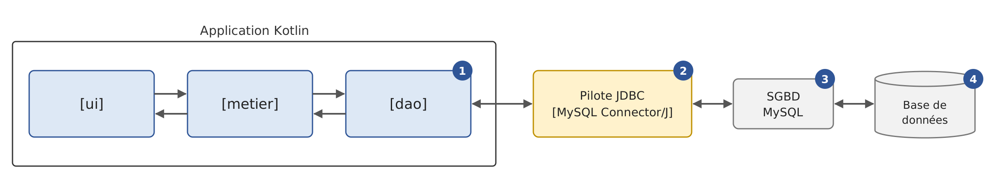
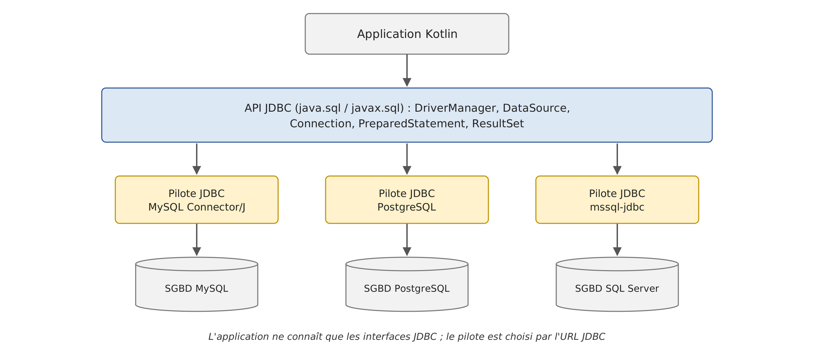

10. Database access with JDBC
10.1. The JDBC driver
Let’s revisit the layered architecture used repeatedly since Chapter 6. So far, the [dao] layer of the [Impots] application has utilized three types of data sources:
- data hard-coded into the code ([HardwiredImpot]);
- data from a text file ([FileImpot]);
- data from a JSON file ([JsonImpot]).
In this chapter, we examine the case where the data comes from a database. The architecture becomes as follows:

In the diagram above, the [dao] layer communicates with the [1] (Database Management System) [3], which manages the database [4], through a class library specific to the SGBD used by [2]. This library implements a standard API feature of the Java platform, JDBC (“Java DataBase Connectivity”), which has been part of the JDK since version 1.1 in 1997. It is referred to as a JDBC driver (“JDBC driver”). All common SGBD versions include a JDBC driver, distributed as a [.jar] archive.
Kotlin does not have its own API for database access: a Kotlin program running on the JVM uses JDBC directly, just as it uses NIO files or threads from the JDK. This is one of the language’s major advantages: all JDBC drivers written for Java—and all libraries built on top of them—can be used without modification. As we’ll see throughout this chapter, what Kotlin brings to the table is a more concise and safer way to write JDBC code: a [use] function to close resources, extension functions to read results, data classes to represent rows, and no checked exceptions.
JDBC is primarily a set of interfaces, defined in the [java.sql] and [javax.sql] packages of the [java.sql] module within JDK: [Connection], [Statement], [PreparedStatement], [ResultSet], [DataSource]… A JDBC driver provides classes that implement these interfaces. The application code, on the other hand, only interacts with the interfaces: it generally does not contain the names of the driver’s classes. This differs from other platforms, where the code often directly uses the classes specific to each SGBD ([MySqlConnection], [SqlConnection]… in C#): on the JVM, abstraction has been the norm from the start, and switching to a different SGBD essentially means changing the driver and the database address, as we will see. Nevertheless, each SGBD has its own dialect, SQL: this independence has its limits, which we will also examine.
We use a single SGBD, MySQL 8, which the appendix “The SGBD MySQL with Laragon” installs on Windows, along with its official driver, JDBC, and MySQL Connector/J, version 9.7.0. The databases are created by SQL scripts run with the [mysql] command-line client; the appendix also shows how to create them using the HeidiSQL graphical client included with Laragon.
10.2. The Two Ways to Use a Data Source
A database can be accessed in two different ways:
- connected mode;
- offline mode.
In connected mode, the application:
- opens a connection to the data source;
- works with the data source in read/write mode;
- closes the connection.
In offline mode, the application:
- opens a connection to the data source;
- retrieves a copy of all or part of the data from the source into memory;
- closes the connection;
- works with the in-memory copy of the data, reading from and writing to it;
- when the work is finished, opens a connection, sends the modified data to the data source so it can be updated, and closes the connection.
Connected mode is the mode of the [ResultSet] interface of JDBC: the rows of a query’s result are read while the connection is open. Offline mode is that of the [CachedRowSet] interface in the [javax.sql.rowset] package (Java 5): an in-memory table that is populated from a query, modified offline, and then sends its changes back to the database. These “RowSet” components are still present in JDK 25 but are rarely used in new applications: working with an in-memory copy of the data, with subsequent saving of changes, is now handled by a ORM (“Object-Relational Mapper”), which manipulates ordinary objects rather than table rows. The most widely used ORM on the JVM, Hibernate, is the subject of Chapter 11; it can be used in both Kotlin and Java. We will therefore focus primarily on the connected mode—on which Hibernate is based—and will demonstrate the disconnected mode only through an example at the end of the chapter.
10.3. Basic Concepts of Database Operations
10.3.1. The example database
We will explain the main concepts of using a database with a database named MySQL. It contains a single table, [articles], where each row describes an item in a store:
- [ID]: a unique identifier for the item, which is the table’s primary key;
- [NOM]: the item’s name, which is also unique;
- [PRIX]: its price;
- [STOCKACTUEL]: its current stock level;
- [STOCKMINIMUM]: the minimum stock level below which the item must be restocked.
The database is created by the following script: SQL [sql/dbarticles.sql]:
- Line 5: The script is a text file encoded in UTF-8. [SET NAMES utf8mb4] indicates this to the server; otherwise, the accented characters in lines 31–36 could be misinterpreted by the client [mysql];
- Lines 8–9: The database is deleted if it exists, then recreated. The script can thus be run multiple times to restore the database to its initial state. [utf8mb4] is the full Unicode encoding of MySQL (the legacy encoding [utf8] of MySQL encodes only characters using up to three bytes);
- line 12: [dbarticles] becomes the current base: the subsequent SQL commands will be executed on it;
- lines 15–27: the definition of the table [articles]:
- line 16: the column [ID] is the table’s primary key ([PRIMARY KEY]). The attribute [AUTO_INCREMENT], specific to MySQL, indicates that its value is generated by SGBD itself when a row is inserted: 1, 2, 3… The other SGBD entries have equivalent concepts, but with different syntax ([IDENTITY] for SQL Server, [GENERATED … AS IDENTITY] for PostgreSQL and Oracle);
- Line 18: The price is an exact decimal number with 10 digits, including 2 decimal places. Avoid using floating-point types for amounts, such as [DOUBLE] (see the difference between [Double] and [BigDecimal] in Chapter 3). The type SQL [DECIMAL] corresponds to the class [java.math.BigDecimal], which Kotlin uses as-is;
- Lines 22–26: integrity constraints. [UNQ_NOM] prohibits two items from having the same name; the constraints [CHECK] prohibit an empty name, a negative or zero price, and negative inventory. MySQL silently ignored the [CHECK] constraints until version 8.0.16; it has enforced them since then;
- Lines 30–36: insertion of six lines. The [ID] column is not initialized: SGBD assigns a value to it.
The script is run using the command-line client [mysql], in the [sql] folder (the user [root] of MySQL does not have a password in the annex installation; otherwise, add the [-p] option, and the client will prompt for it):
The command does not display anything if everything goes well. You can check the table's structure and content using the same client:
- Line 1: The option [-t] requests a table display; the option [-e] specifies the SQL commands to be executed, and the option [--default-character-set=utf8mb4] ensures that accented characters are displayed correctly in a UTF-8 terminal;
- lines 3–9: the table structure, obtained using the commands MySQL and [describe];
- lines 12–19: the table’s contents. The values in the [ID] column were generated by SGBD.
A note on case sensitivity: column names are always case-insensitive ([nom] and [NOM] refer to the same column), but table names are server filenames. They are case-insensitive on Windows but case-sensitive on Linux. To ensure the examples work everywhere, the table is named [articles], in lowercase, and the queries write it that way.
The programs in this chapter modify the table [articles]. The results shown here were obtained by rerunning the script [dbarticles.sql] before each program; readers who wish to reproduce the exact same results should do the same.
Now that we have a database, we’ll be able to make use of it. Before we do that, let’s review a few points about SQL.
10.3.2. The four basic commands of the SQL language
SQL (“Structured Query Language”) is a partially standardized language for querying and updating databases. All SGBD dialects comply with the standardized part of SQL but add proprietary extensions to the language that take advantage of their specific features. We have already encountered two examples of this: the automatic generation of primary keys and the allowed data types for table columns often depend on the SGBD.
The four basic commands of the SQL language that we present here are standardized and accepted by all SGBD instances:
Command | Role |
[select col1, col2, … from table1, table2, … where condition order by expression] | The query used to retrieve data from a database. Only the keywords [select] and [from] are required. A join is performed with all tables following the keyword [from]; only the columns following the keyword [select] are retained; only the rows that satisfy the condition of the keyword [where] are retained; the resulting rows, sorted according to the expression in the keyword [order by], form the result of the query. This result is a table. |
[insert into table(col1, col2, …) values (val1, val2, …)] | Inserts a row into [table]. [(col1, col2, …)] specifies the columns of the row to be initialized with the values [(val1, val2, …)]. |
[update table set col1=val1, col2=val2, … where condition] | Updates the rows in [table] based on [condition] (all rows if there is no [where]). For these rows, the [coli] column is set to [vali]. |
[delete from table where condition] | Deletes all rows from [table] that match [condition] (all rows if there is no [where]). |
We will write a console application that issues SQL commands against the [dbarticles] database. Here is an example of the program in action (the SQL commands entered via the keyboard appear after the prompt “Request SQL”; for this document, they were provided to the program via standard input redirection and then reinserted after the prompt to which they respond); the reader is encouraged to understand the SQL commands issued and their results:
- line 2: the database’s URL and the user JDBC: these are the parameters used to connect to the database;
- line 4: the contents of the [articles] table are retrieved;
- line 17: a new row is inserted. Note that the [id] column is not initialized in this operation because SGBD will generate its value;
- line 20: verification. Line 32: the row has indeed been added, with [id] 7. With [select *], the column names are those of the table, in uppercase;
- line 34: we increase the price of the item that was just added by 10%;
- Line 43: The price increase did indeed take place;
- line 45: the item added previously is removed;
- line 48: verify that only six items remain;
- line 56: the program accepts only the four commands [select], [insert], [update], and [delete];
- line 60: an error reported by SGBD: the table [article] does not exist;
- line 63: the uniqueness constraint [UNQ_NOM] prevents the addition of a second item [vélo]. The error messages from MySQL, like those from the driver, are in English.
10.3.3. The basic interfaces of JDBC for connected mode
Let’s return to the diagram of an application accessing a database through a JDBC driver:
In connected mode, the application:
- opens a connection to the data source;
- works with the data source in read/write mode;
- closes the connection.
Three types of objects are primarily involved in these operations:
- the connection ([Connection]), which encapsulates the properties and methods of the database connection;
- the SQL command ([Statement], or [PreparedStatement] for a parameterized command), which encapsulates the properties and methods of the executed SQL command;
- the result ([ResultSet]), which encapsulates the properties and methods of the result of a SQL or [select] command.
These are interfaces from the [java.sql] package. The MySQL driver implements them using classes from its own packages ([com.mysql.cj.jdbc.ConnectionImpl], [ClientPreparedStatement], [ResultSetImpl]…), which the application does not need to be aware of: it obtains its objects through methods that return interfaces. The connection is obtained from the [DriverManager] class (or from a [DataSource] data source, which we will discuss later), the order SQL is created by the connection, and the result is returned by the order SQL.
These interfaces are Java interfaces. Kotlin uses them according to its standard rules for accessing Java code: a pair of accessors [getXxx] / [setXxx] is used as a property [xxx] ([resultat.metaData] rather than [resultat.getMetaData()], [connexion.autoCommit = false] rather than [connexion.setAutoCommit(false)]), and the values returned by a Java method have a platform type (referred to as [String!] in compiler messages): Kotlin does not know if they can be [null] and leaves it up to the developer to choose whether to treat them as [String] or as [String?] (Chapter 3). We’ll see that this is important for columns that can contain the values SQL and [NULL].
10.3.3.1. The Connection Interface
It is used to manage the connection to the database. A connection is obtained via the static method [DriverManager.getConnection(url, utilisateur, motDePasse)], which takes the database’s URL and JDBC—for example, [jdbc:mysql://localhost:3306/dbarticles]—and the user’s credentials. The returned connection is already open. The methods of the [Connection] interface that we will use are as follows:
Method | Role |
[createStatement] | Creates a SQL order associated with this connection. |
[prepareStatement] | [prepareStatement(sql)] creates an order SQL configured as [PreparedStatement] associated with this connection. |
[prepareCall] | [prepareCall("{call nom(?, ?)}")] creates an order [CallableStatement] that executes a stored procedure in the database. |
[autoCommit] | [autoCommit = false] (the Java method [setAutoCommit]) starts a transaction (see below). |
[commit], [rollback] | validates and rolls back the current transaction. |
[metaData] | (the Java method [getMetaData]) returns a [DatabaseMetaData] object that describes the SGBD and the driver. |
[isValid] | [isValid(secondes)] verifies that the connection is still usable. |
[close] | closes the connection, along with the SQL commands and the results they produced. |
Opening a connection takes the following form (the code snippets in this paragraph are taken from the project’s [modeles/Modeles.kt] file, which compiles but is not executed):
Type inference assigns the type [Connection!] to [connexion]: a connection that can be used without a null check ([getConnection] never returns [null]: if it fails, it throws an exception).
10.3.3.2. The Statement Interface
It is used to execute a SQL command. The methods of this interface that we will use are as follows:
Method | Role |
[executeQuery] | [executeQuery(sql)] executes a SQL [select] command. This returns a [ResultSet] object representing the result of [select]. |
[executeUpdate] | [executeUpdate(sql)] executes a command SQL [update], [insert], [delete] (or a definition command such as [create table]). This returns the number of rows affected by the operation (updates, inserts, deletes). [executeLargeUpdate] (Java 8) returns this number in the form of a [Long]. |
[execute] | [execute(sql)] executes any SQL command. Returns [true] if the command produced a [ResultSet], which is then obtained via the property [resultSet], [false] if it produced a number of lines, obtained via the property [updateCount]. |
[addBatch], [executeBatch] | add a job to a batch and execute the batch (see below). |
[generatedKeys] | (the Java method [getGeneratedKeys]) returns the primary keys generated by SGBD during a [insert]. |
[queryTimeout] | [queryTimeout = secondes] sets the maximum execution time for the order. |
[close] | closes the order SQL, as well as its [ResultSet]. |
The [PreparedStatement] interface is derived from [Statement]: it is a parameterized SQL command, whose text is set at creation and whose parameters are assigned values by [setXxx] methods. We will examine this in the section “Parameterized Queries.” The execution of SQL commands without a transaction takes the following form:
10.3.3.3. The ResultSet interface
It encapsulates the results of a SQL [select] order. A [ResultSet] object represents a table with rows and columns, which is processed sequentially: first the first row, then the second, and so on, with no option to go back (this is the default type, [TYPE_FORWARD_ONLY]; JDBC also supports results that can be traversed in both directions, but these are rarely used). The [ResultSet] has a cursor initially positioned before the first row: you must call [next] to read the first row. The methods of this interface that we will use are as follows:
Method | Role |
[next] | Moves to the next row in the result table. Returns [true] if the row was successfully read, and [false] if there are no more rows. |
[getInt] | [getInt(i)] returns the integer value of column number i in the current row. Columns are numbered starting at 1, not 0. [getInt("nom")] returns the value of the column named [nom]. Other similar methods include [getBoolean], [getBigDecimal], [getDouble], [getLong], [getString]… Since they have a parameter, Kotlin does not convert them into properties. |
[getObject] | [getObject(i)] returns the value of column i as a [Any] (a Java [Object]), of the type chosen by the driver; [getObject(i, LocalDate::class.java)] returns it in the requested type (in Kotlin, [X::class.java] refers to the Java object [Class] of a class, the Java [X.class]). |
[wasNull] | returns [true] if the last column read had no value, which is represented by the value SQL [NULL]. Methods that return an object ([getString], [getBigDecimal], [getObject]…) then return [null]; those that return a base type ([getInt], [getDouble]…) return 0: only [wasNull] allows us to distinguish 0 from [NULL]. |
[metaData] | (the Java method [getMetaData]) returns a [ResultSetMetaData] object that describes the columns in the result: [columnCount] (the number of columns), [getColumnLabel(i)] (the name of column No. i), [getColumnTypeName(i)] (its type SQL)… |
[close] | closes the result. |
The processing of a [ResultSet] object often looks like the following:
The loop [while (resultat.next())] is the same as in Java: we’ll see that in Kotlin, it’s written once and for all in an extension function, rather than being repeated in every function that reads a result.
The type of platform deserves a note here. For a column that accepts the values SQL, [NULL], and [getString(i)], [null] is returned; if you write [val nom: String = resultat.getString(2)], Kotlin inserts a check and throws a [NullPointerException] error as soon as the assignment occurs, with the message “getString(...) must not be null.” Therefore, you must declare the column values that can be *[NULL]* as [String?]***, and then process them using the ***[?.] and ***[?:]* operators from Chapter 3. In our table, all columns are [NOT NULL]: the problem does not arise.
With MySQL Connector/J, the result rows are, by default, all transferred from the server to the application’s memory as soon as the query is executed; [next] then iterates through them. For a result set of several million rows, you can instruct the driver to receive them as they are read (parameter [useCursorFetch=true] for URL and [fetchSize = n] on the SQL command): This is a driver-specific setting that we will not use.
10.3.4. Error Handling
The [dao] layer may encounter numerous errors while operating the database: server down, database does not exist, incorrect password, SQL syntax error, integrity constraint violation, etc. These are reported as [SQLException] exceptions. In Java, [SQLException] is a checked exception: all methods in JDBC declare it in their [throws] clause, and the Java compiler requires the code that calls them to either catch it or declare it in turn. Kotlin does not have controlled exceptions (Chapter 3): the compiler imposes no restrictions, and a Kotlin function that calls JDBC does not need to declare anything. This is both a freedom and a responsibility: nothing alerts the developer that a line might fail; it is up to the developer to decide where errors are handled. A [dao] layer must handle these errors and, no matter what happens, release the resources it has acquired: the connection, the SQL command, and the result must be closed. Written using [finally] clauses—as was done in Java prior to Java 7—the code shown above for processing the result of a [select] order becomes the following:
This code is cumbersome: the connection must be declared as [var], of type [Connection?], before the [try] to be visible in the [finally] clause, and its closure may itself trigger a [SQLException] (line 23), which must be intercepted in the [finally] clause. Note the safe call to [connexion?.close()]: if the connection could not be opened, [connexion] evaluates to [null] and nothing is done.
Chapter 3 presented the Kotlin solution: the use extension function, defined for any *[AutoCloseable] object, executes the block (the lambda) passed to it and closes the object upon exiting the block, regardless of how the block is exited. This is equivalent to Java’s try-with-resources statement. The objects *[Connection]*, *[Statement], and *[ResultSet] implement the *[AutoCloseable] interface:
- lines 3–5: three resources are opened, each by a
*[use]. The opened object is the lambda parameter (*[connexion],*[ordre],[resultat]*); we give it a name rather than using [it], because the three lambdas are nested and a [it] would refer to the object of the innermost [use]. Unlike Java’stry-with-resources, which accepts multiple resources within its parentheses,*[use]handles only one resource: therefore, we nest the[use]s. Resources are closed in the reverse order in which they were opened: the result, then the SQL, then the connection. An exception thrown by a closure does not clear the one that may have caused the block to exit: it is attached to it as a “suppressed” exception ([suppressedExceptions]*), as in Java; - Line 13: The clause [catch] intercepts connection and execution errors as well as termination errors.
Since [use] is a [inline] function (Chapter 7), its block is not a lambda object: it is copied in place of the call, and a [return] statement written within the block terminates the enclosing function after the resource has been closed. Furthermore, [use] returns the value of its block: [val n = connexion.createStatement().use { it.executeUpdate(sql) }] executes the command, closes the [Statement] object, and returns the number of modified lines. We will often make use of these two properties.
The benefit of [use] is not just the line savings: it saves the developer from having to close the connection manually. However, forgetting to close a connection can go unnoticed and cause the application to “crash” in a seemingly random manner whenever SGBD (or the connection pool, which we’ll cover later) reaches the maximum number of open connections it can support. In the rest of this course, every JDBC resource is opened using a use statement.
The [SQLException] class provides three pieces of information about the error, which Kotlin presents as properties:
- [message]: the error message;
- [errorCode]: the error code specific to SGBD (the error number MySQL: 1049, 1062…);
- [sqlState]: a five-character error code defined by the SQL standard (“SQLSTATE”), common to all SGBD codes for the most common errors: the class [42] denotes a syntax or access error, [23] an integrity constraint violation, [08] a connection error…
Note the property [sqlState], derived from the Java method [getSQLState]: when a name begins with multiple uppercase letters, Kotlin converts them to lowercase, except for the last one if it begins the next word ([SQLState] becomes [sqlState]). Since Java 6 (JDBC 4.0), [SQLException] also has standard derived classes, which the drivers invoke depending on the nature of the error. The main ones are as follows:
Class | Error |
[SQLSyntaxErrorException] | syntax error SQL, table or database does not exist, insufficient permissions (SQLSTATE, class 42) |
[SQLIntegrityConstraintViolationException] | Integrity constraint violation: duplicate key, foreign key, column [NOT NULL] (SQLSTATE, class 23) |
[SQLDataException] | Invalid data: value too large, conversion impossible (SQLSTATE, class 22) |
[SQLTimeoutException] | Timeout ([queryTimeout]) |
[SQLTransactionRollbackException] | Transaction rolled back by SGBD, for example, due to a deadlock |
[SQLNonTransientConnectionException], [SQLRecoverableException] | Connection problem |
The program [Jdbc02.kt] causes various errors and displays them:
Results:
Comments:
- Lines 10–12: the database connection parameters, defined at the top of the program as high-level constants named [const val], which are private to the file;
- line 15: the error number MySQL “Duplicate entry,” as named in the MySQL documentation;
- lines 19–27: six operations that fail: database does not exist; server unreachable (no MySQL server is listening on port 3399, which produces the same error as a stopped server); syntax error; table does not exist; duplicate item name; negative price. The [connectTimeout=5000] parameter of the URL on line 20 limits the connection wait time to 5 seconds (5000 ms);
- line 31: the function [executer] executes the command SQL [requete] on the database specified by URL [url];
- Lines 34–35: The connection and the SQL command are opened by two nested [use] commands. The second one fits on a single line: the lambda [{ ordre -> ordre.execute(requete) }] has only one instruction;
- Line 35: The method [execute] executes any SQL command: [select] or [insert]. If it throws an exception, the “no error” message on line 37 does not appear;
- line 39: a [when] on the exception, with [is Type] clauses (Chapter 3);
- line 41: a guard ([if], Kotlin 2.2) allows for the separate handling of a specific error: an integrity constraint violation ([SQLIntegrityConstraintViolationException]) with code MySQL equal to 1062, i.e., a duplicate key. This is equivalent to the guarded pattern [case … when …] from Java 21’s [switch]. In this case, an application would display a message that is understandable to the user;
- lines 44–46: the other errors. The exception class is displayed ([ex.javaClass.simpleName]: [javaClass] returns the Java object [Class]), the error code MySQL and the code SQLSTATE, followed by the first line of the message: Some driver messages span multiple lines. The property [message] is of type [String?] (an exception may not have a message): it is handled using safe calls, [?.lineSequence()?.first()]; [lineSequence] splits the string into a sequence of lines, the first of which is taken by [first]. If the message were [null], the expression would evaluate to [null] and the template would display “null.”
The results show that the driver MySQL uses the standard classes: [SQLSyntaxErrorException] for a nonexistent database (1049), a syntax error (1064), or a nonexistent table (1146), all of which are derived from SQLSTATE and [42xxx]. An unreachable server generates a [CommunicationsException], a driver class (derived from [SQLRecoverableException]): there is no MySQL error code, since the server did not respond, but the SQLSTATE and [08S01] indicate a connection failure. A violation of a constraint [CHECK] (error 3819) is simply a [SQLException], derived from SQLSTATE and [HY000] (“general error”): MySQL does not assign it a SQLSTATE of class 23. Therefore, derived classes cannot be fully relied upon: the error code and the SQLSTATE remain useful.
A [dao] layer that wishes to remain independent of the SGBD uses only the standard classes and the SQLSTATE; the error codes ([errorCode]) are specific to each SGBD.
One final note on checked exceptions. A Kotlin function that throws a [SQLException] does not declare it anywhere; if it is to be called from Java code, the Java code will not be able to catch the exception using a [catch (SQLException e)], which the Java compiler rejects when none of the called methods declare it. We therefore add the [@Throws(SQLException::class)] annotation to the Kotlin function, which generates the [throws] clause expected by Java. Our programs, written entirely in Kotlin, do not need this.
10.3.5. Configuring the sample project
The JDBC driver for MySQL is a library published on Maven Central, the library repository where Gradle fetches dependencies (Chapter 2). The [10-jdbc] folder in this chapter is a multi-project Gradle build (Chapter 2): the programs in this chapter form the [jdbc] subproject, and the [Impots] version 6 application, covered at the end of the chapter, consists of two other subprojects:
The [settings.gradle.kts] file in this chapter declares the subprojects:
- lines 3–6: the plugin that allows Gradle to download JDK itself if it cannot find it on the machine (Chapter 2);
- line 11: the [jdbc] subproject, whose folder bears the same name;
- lines 13–16: version 6 of the [Impots] application, presented at the end of the chapter.
The file [build.gradle.kts] from the subproject [jdbc] is as follows:
- lines 2–5: the Kotlin plugin for JVM, whose version is set by the root project (Chapter 2), and the [application] plugin, which provides the [run] task;
- lines 15–23: the project’s four libraries, downloaded by Gradle from Maven Central during the first build:
- line 17: the JDBC driver for MySQL, MySQL Connector/J, with coordinates [com.mysql:mysql-connector-j]. Up to version 8.0.30, it was published under the coordinates [mysql:mysql-connector-java], which are still found in many projects. A program that uses only the interfaces of JDBC needs the driver only at runtime: it is then declared with [runtimeOnly], which ensures that no driver classes can be used by mistake in the code. We declare it with [implementation] because the program [Jdbc03] uses a class from the driver, [MysqlDataSource], for a demonstration;
- line 18: the connection pool HikariCP, which we will use from the program [Jdbc03];
- line 21: HikariCP writes its log messages through API SLF4J (“Simple Logging Facade for Java”), which requires an implementation: We use Logback, which is required only for runtime ([runtimeOnly]). Without it, SLF4J would display a warning at startup. The file [src/main/resources/logback.xml], shown below, displays only warnings and errors;
- line 23: the coroutine library, kotlinx-coroutines (Chapter 9), used by the program [Jdbc08Coroutines], which executes JDBC requests in coroutines;
- lines 27–33: the compiler, configured as in all projects in the course: JDK 25, warnings treated as errors, parameter names preserved in the compiled classes;
- lines 38–40: the program executed by [gradlew run] is specified by the property [main]; by default, this is [jdbc01.Jdbc01Kt];
- lines 43–45: The executed program can read from the keyboard, which [Jdbc01] requires;
- lines 48–51: Programs launched by Gradle write their output to UTF-8 so that accented characters display correctly on Windows (Chapter 2).
The Logback configuration file is as follows:
- lines 4–8: Messages are written to the console in the format “class level - message”;
- line 9: only messages with level [WARN] (warning) or [ERROR] are displayed. With level [INFO], you would see the startup and shutdown messages for the HikariCP pool.
There are two common JDBC drivers for MySQL:
- [com.mysql:mysql-connector-j] (“ Connector/J”), released by Oracle, the owner of MySQL, under the GPL v2 license with an exception (“Universal FOSS Exception”) that allows it to be used with software distributed under other free licenses; a commercial license covers all other cases. This is the official driver, which we use;
- [org.mariadb.jdbc:mariadb-java-client], the driver for MariaDB (a free variant of MySQL), licensed under LGPL, which also works with MySQL.
Both drivers implement the same JDBC interfaces: switching from one to the other requires only changing the dependency on [build.gradle.kts] and the start of URL ([jdbc:mariadb:] instead of [jdbc:mysql:]).
A historical note: Up until Java 5, you had to load the driver class before opening a connection, using a statement like [Class.forName("com.mysql.jdbc.Driver")], which can still be found in many examples on the Internet. Since Java 6 (JDBC 4.0), this is no longer necessary: each driver archive declares its class in a [META-INF/services/java.sql.Driver] file, and [DriverManager] automatically loads all drivers present in the classpath via the services mechanism ([ServiceLoader]).
Connection parameters should not be hard-coded into an actual application: they depend on the machine on which the application is installed. The first program in this chapter reads them from a properties file (Chapter 6), [dbarticles.properties], located in the subproject folder:
- Line 2: the database’s URL JDBC. A URL JDBC has the form [jdbc:sous-protocole:détails]. The subprotocol identifies the driver ([mysql]), and the details—whose format depends on the driver—identify the base. For MySQL, these are:
- [//localhost]: the name of the machine on which SGBD and MySQL are located—in this case, [localhost]—that is, the machine on which the program is running;
- [:3306]: the port on which the MySQL server listens for connections; the default is 3306;
- [/dbarticles]: the database name;
- optional driver parameters may follow, after a question mark, in the form [?param1=valeur1¶m2=valeur2]. We will encounter [connectTimeout], [rewriteBatchedStatements], and [allowMultiQueries];
- line 3: the user MySQL—here, [root]—the administrator of SGBD;
- line 4: their password, left blank here.
The Connector/J documentation provides a complete list of URL parameters: Connector/J Configuration Properties.
The other programs in this chapter, which are shorter, store their connection parameters in constants at the top of the program, such as [Jdbc02.kt]: this is simpler for examples but should not be done in a real application.
To run the programs, navigate to the [10-jdbc] folder and type:
The first command runs [Jdbc01], and the second runs [Jdbc02]. The prefix [:jdbc:] refers to task [run] in subproject [jdbc]; the task [run] runs in the subproject folder, [10-jdbc/jdbc], where the file [dbarticles.properties] is located. The [-q] option (“quiet”) suppresses Gradle messages: only the program’s output remains. Of course, you can also run the programs from IntelliJ and IDEA by clicking the green triangle next to the [main] function (in which case, you’ll need to verify the current directory in the run configuration). In the following, we will only reproduce the program output.
10.3.6. The example program
The program [Jdbc01.kt], for which we saw an example of execution, is as follows (main program):
- Lines 5–8: the JDBC interfaces and classes used, all from the [java.sql] package. The program does not contain the name of any class from the MySQL driver: only the URL and JDBC, read from the configuration, refer to MySQL;
- Line 16: the four accepted SQL commands, in a read-only set created by [setOf] (Chapter 5);
- lines 19–21: the three connection parameters are combined into a data class. Rather than passing three strings to each function, as the Java program in the course does, we pass a [ParametresConnexion] object, which knows how to open a connection: its [connecter] method calls [DriverManager.getConnection] with its own properties. The returned type, [Connection], is specified explicitly: without it, the function would return the platform type [Connection!];
- lines 25–29: reading the properties file, as described in Chapter 6. The extension function [bufferedReader] of [kotlin.io.path] opens the file in UTF-8, and [use] closes it. [getProperty] returns the value of a key, or [null] if the key is missing: its Kotlin type is [String?]. Since URL is required, the Elvis operator [?:] triggers a [IOException] when it is missing, which allows an absent file and an incomplete file to be handled in the same way; [getProperty(clé, défaut)] returns a default value for the other two parameters;
- line 32: the top-level function [main], with no parameters since the program does not use its arguments;
- lines 34–38: [try] is an expression (Chapter 3): its value is that of the [try] block if everything goes well; in the event of an error, the [catch] clause displays a message and terminates the program using [return]. The file is searched for in the current folder, the one from which the program is launched: this is the subproject folder when you type [gradlew :jdbc:run];
- line 45: the loop for entering SQL commands typed on the keyboard and executing them on the database;
- Lines 47–48: [print] displays the prompt without moving to the next line, then [readlnOrNull] reads a line typed on the keyboard; it returns [null] if standard input is closed. The safe call [?.trim()] followed by [orEmpty] transforms this [null] into an empty string, which stops the loop on the next line;
- line 52: the first word of the query, obtained by splitting the query on spaces (regular expression [\s+], Chapter 5). It is converted to lowercase for comparison, but the query itself is not modified: converting the entire query to lowercase would prevent the insertion of an article named “Bike”;
- lines 53–55: if the query is invalid, an error message is displayed and the program moves on to the next query. The operator [!in] calls the method [contains] of the set (Chapter 4);
- lines 58–61: the SQL command is executed. Its form varies depending on whether it is a [select] command or a [insert], [update], or [delete] command: in the first case, the command retrieves data from the database without modifying it; in the second, it updates the database without retrieving any data. In both cases, execution is delegated to a function that receives the connection parameters and the SQL command to be executed.
Note the absence of any exception declarations: in Java, reading the file requires intercepting or declaring the [IOException] exception. In Kotlin, this is a choice: we catch the [IOException] here because this is where we know what to do with the error (notify the user and stop).
10.3.7. Executing a SELECT request
Executing SQL commands involves the following steps:
- connecting to the database;
- sending the SQL commands to the database;
- processing the results of the SQL commands;
- closing the connection.
Steps 2 and 3 can be repeated; the connection is closed only at the end of database processing. Open connections are limited resources in a SGBD: they must be conserved, and we always strive to limit the lifetime of an open connection. In our program, the connection is closed after each SQL command, and a new connection is opened for the next command.
However, opening a connection is costly: it requires establishing a network connection with the server, potentially negotiating encryption, and authenticating. [DriverManager] does nothing to reduce this cost: each call to [getConnection] opens a new network connection, and each [close] actually closes it. For an interactive tool like this one, that’s not a problem. An application that executes many SQL commands—a web server, for example—uses a connection pool instead: when the application closes a connection, the pool does not actually close it but returns it to the pool; when the application requests a new connection, it receives one of the connections from the pool that is already established. The advantage of this system is that it is transparent to the developer: the code that opens and closes connections using a [use] does not need to be modified. We’ll see how to use it in the section “Data Sources and Connection Pools.” Opening a connection at the start of each operation and closing it at the end is therefore best practice.
First, we’ll focus on executing the commands SQL and [select]. The function [executeSelect] in our sample program and the function [afficherResultSet] that it uses are as follows:
- Line 2: The function receives the connection parameters and the command SQL [select] [requete] to be executed. Like the program’s other two functions, it is declared as [private]: it is visible only in the file [Jdbc01.kt];
- lines 5–7: three nested [use] statements open three resources:
- line 5: the connection to the database, obtained from [DriverManager] via the [connecter] method. [DriverManager] queries each driver in the classpath: the first one that recognizes URL opens the connection. This is when the connection parameters are used, and when connection errors occur. The connection is of the type defined by the [Connection] interface: the code does not know that it is an object of the MySQL driver;
- Line 6: the command SQL, a [Statement] object created by the connection. The same object type is used to execute a [select] command and a [update], [insert], and [delete] command;
- Line 7: The [select] command is executed by the [executeQuery] method, which returns a [ResultSet] object;
- Line 9: The function [afficherResultSet] is responsible for displaying the results;
- Lines 13–14: Any database operation can trigger a [SQLException]. This is all the more likely here because the SQL commands entered by the user may contain syntax errors. We need to be able to inform the user of this: the exception is caught and its message displayed. By the time the [catch] clause executes—whether the exception originates from the connection, execution, or reading of rows—the [use] commands have already closed the result set, the SQL command, and the connection;
- Line 19: The function receives a [ResultSet] object. Its methods can throw a [SQLException]; in Java, the corresponding method must declare it as [throws SQLException]. In Kotlin, no declaration is needed: the exception is simply propagated to the calling function, which catches it;
- lines 21–25: the column names of the result table from [select] are displayed. These are the [coli] columns from the [select col1, col2, … from table …] query. They are provided by the result’s metadata, a [ResultSetMetaData] object obtained via the [metaData] property: [columnCount] provides the number of columns, and [getColumnLabel(i)] provides the name of column number i, or its alias if the query specifies one ([select count(*) as nombre …]). Since the columns are numbered starting at 1, the range [1..metadonnees.columnCount] (line 22) is constructed, and then [joinToString] (Chapter 5) converts each number into a name and concatenates the names, separating them with commas. No intermediate array is needed, unlike in the Java version. ["-".repeat(n)] produces a string of n dashes;
- lines 27–28: we iterate through the result table and display the values of each row, separated by spaces, using the same interval [colonnes] and the same function [joinToString];
- line 28: the type of column i in the result is unknown because the query entered by the user is unknown. Therefore, we cannot use the syntax [resultat.getXxx(i)], where [Xxx] is the column type. Instead, we use [getObject(i)], which returns the value in the form of a [Any!]; the template ["${resultat.getObject(it)}"] converts it to a string using its method [toString] (and displays “null” for a value of SQL [NULL]). For the column [prix], which is of type SQL [DECIMAL(10,2)], the object is a [BigDecimal] with two decimal places, which its method [toString] displays with a decimal point ([500.00]): unlike [String.format], [toString] does not depend on the workstation’s language. A “French-style” display would use ["%.2f".format(prix)] or the class [NumberFormat] (Chapter 5).
10.3.8. Executing an update request: INSERT, UPDATE, DELETE
The function code for [executeUpdate] is as follows:
The execution of an update order differs from that of a [select] order only in the method used by the SQL order: [executeQuery] for [select], [executeUpdate] for [update], [insert], [delete]:
- lines 4–5: this time there are only two resources: the connection and the order SQL;
- Line 7: The command [update], [insert], or [delete] is executed by the method [executeUpdate]. If successful, this method returns the number of rows updated ([update]), inserted ([insert]), or deleted ([delete]);
- Line 9: This number of rows is displayed.
The reader is encouraged to review the execution example provided in the section “The Four Basic Commands of the SQL Language.”
10.4. JDBC and Independence from SGBD
10.4.1. The current JDBC drivers
The code we have examined does not contain the name of any class from the MySQL driver: it uses only the interfaces of [java.sql]. To make it work with another SGBD, in principle, you simply need to add the driver for that SGBD to the project and change the URL to JDBC. Here are today’s main JDBC drivers, all published on Maven Central:
SGBD | Gradle Dependency | URL JDBC | Notes |
MySQL | [com.mysql:mysql-connector-j] | [jdbc:mysql://hôte:3306/base] | The official driver used in this course |
MariaDB, MySQL | [org.mariadb.jdbc:mariadb-java-client] | [jdbc:mariadb://hôte:3306/base] | |
PostgreSQL | [org.postgresql:postgresql] | [jdbc:postgresql://hôte:5432/base] | |
SQL Server, Azure SQL | [com.microsoft.sqlserver:mssql-jdbc] | [jdbc:sqlserver://hôte:1433;databaseName=base] | the Microsoft driver |
Oracle | [com.oracle.database.jdbc:ojdbc11] | [jdbc:oracle:thin:@//hôte:1521/service] | |
H2 | [com.h2database:h2] | [jdbc:h2:mem:base] or [jdbc:h2:./fichier] | a SGBD written in Java, embedded in the application: in-memory or file-based database, serverless; widely used for testing |
SQLite | [org.xerial:sqlite-jdbc] | [jdbc:sqlite:fichier.db] | A database in a file, without a server |
Note that the format of URL, following [jdbc:], is specific to each driver.
The structure is as follows:

The application only recognizes the interfaces of JDBC. The concrete objects are created by the driver, which [DriverManager] selects based on URL: Each driver present in the classpath declares its main class, an implementation of the [java.sql.Driver] interface, whose [connect(url, propriétés)] method returns [null] if URL is not intended for it ([acceptsURL(url)] also allows you to request it). The program [Jdbc03.kt] demonstrates this. It receives as an argument the URL JDBC from the database:
Results using URL from MySQL (default value):
Results with URL from a database named PostgreSQL, whose driver is not in the classpath:
Here we discuss the first part of the program (the [main] function up to line 36, and the [afficherArticles] function); the second part is covered in the following section:
- Line 17: The URL JDBC from the database, passed as an argument; otherwise, the default MySQL [dbarticles] from the database is used. [firstOrNull] returns the first element of the argument array, or [null] if it is empty; the Elvis operator [?:] then replaces [null] with the default URL. With Gradle, the argument is passed via the [--args] option;
- Lines 21–22: [DriverManager.drivers] (Java 9) returns a stream ([Stream]) of loaded drivers. A Java stream is not a Kotlin collection, but it has a method [iterator()]: this is sufficient for the Kotlin loop [for] to iterate over it. For each driver, [pilote.javaClass.name] returns the full name of its class, and the properties [majorVersion] and [minorVersion] (the Java methods [getMajorVersion] and [getMinorVersion]) provide its version. Only one driver is present in the classpath: that of MySQL, of class [com.mysql.cj.jdbc.Driver], version 9.7 (line 3 of the results);
- line 27: [DriverManager] searches for a driver that supports URL. If none do, [getConnection] triggers a [SQLException] “No suitable driver found” (line 4 of the second set of results). This is the error you get when you’ve omitted the driver dependency in the [build.gradle.kts], or made a typo in the URL;
- lines 28–31: the connection metadata, a [DatabaseMetaData] object, describes the SGBD (name, version), the driver and version of JDBC that it implements: JDBC 4.2, the Java 8 version. JDK 25 defines JDBC 4.3 (Java 9), which includes only minor additions; [DatabaseMetaData] also describes the capabilities of SGBD (transactions, batches, etc.), its tables, and their columns. All this information is obtained through the parameterless [getXxx] methods, which Kotlin presents as properties ([databaseProductName], [driverVersion]…). The property [jdbcMajorVersion] corresponds to the Java method [getJDBCMajorVersion]: as with [sqlState], the initial uppercase letters are converted to lowercase;
- line 32: execution of a parameterized query by the function [afficherArticles];
- lines 61–62: the query has a parameter, denoted [?], which receives its value from [setInt(1, 200)]. Parameterized queries are discussed further on;
- lines 64–65: the results show that the objects manipulated through the interfaces are objects from the MySQL driver: [ConnectionImpl], [ClientPreparedStatement], [ResultSetImpl] (line 6 of the results);
- Lines 66–67: Since the column types are known, the methods [getInt], [getString], and [getBigDecimal] are used, which directly return a value of the expected type.
For this program to work with PostgreSQL, all that is needed is to add the dependency [runtimeOnly("org.postgresql:postgresql:…")] to [build.gradle.kts] and create the database [dbarticles] within PostgreSQL: [DriverManager] would then find two drivers and select the one from PostgreSQL for a URL [jdbc:postgresql:…]. Only MySQL is installed on the machine used to write this course: we did not do this.
10.4.2. Data sources and connection pools
[DriverManager] is the traditional way to obtain a connection. Since JDBC 2.0, applications have preferred to use a data source instead—an object that implements the [javax.sql.DataSource] interface. A data source is configured once and for all (URL, username, password, driver settings) and then provides connections via its [getConnection()] method, without parameters (the [connection] property in Kotlin). The code that uses the data source is unaware of either the URL or the credentials: in an application, it is the data source itself that is registered in the dependency injection container (Chapter 6), rather than the connection parameters. There are two main categories of data sources:
- those provided by drivers, such as [com.mysql.cj.jdbc.MysqlDataSource] for MySQL. Like [DriverManager], they open a new network connection each time [getConnection] is called;
- those that manage a connection pool. The most commonly used one is HikariCP, Spring Boot’s default connection pool. [getConnection] returns a connection from the pool, and [close] returns that connection to the pool instead of closing it.
The second part of the program, [Jdbc03], compares the two (lines 39–55 and the function [mesurer]):
- lines 40–43: a data source [MysqlDataSource]. The scope function [apply] (Chapter 7) executes the block with the created object as the receiver ([this]) and then returns that object: This allows you to configure the object immediately after it is created, without having to repeat its name. [user = "root"] calls the Java method [setUser], and [password = ""] calls the method [setPassword]. For URL, you must call [setURL(url)]: the class [MysqlDataSource] has two pairs of accessors, [getUrl] / [setUrl] and [getURL] / [setURL], both of which would become a Kotlin property [url]; the compiler then refuses to write [url = …] (“overload resolution ambiguity between candidates”). This is the only part of the program that references a class from the driver MySQL: it is for this class that the driver is declared by [implementation] in [build.gradle.kts];
- line 45: the function [mesurer] receives the data source as the type of the [DataSource] interface: it would be suitable for any driver;
- Lines 48–52: A [HikariConfig] object contains the pool configuration: URL, JDBC, identifiers, and the maximum pool size (5 connections; the default value is 10). It, too, is configured by [apply], along with its properties [jdbcUrl], [username], [password], and [maximumPoolSize]. HikariCP uses [DriverManager] to open its connections: it works with any JDBC driver;
- Line 54: The data source [HikariDataSource] is created based on this configuration. It immediately opens its first connections. Since it has open connections, it must be closed at the end of the program: [HikariDataSource] implements [Closeable], and [use] handles this;
- lines 74–82: The function [mesurer] requests a connection to the data source ([repeat(100) { … }]) 100 times and closes it immediately. The function [measureTime] of [kotlin.time] executes the block it receives and returns its duration, an object [Duration], from which [inWholeMilliseconds] derives the number of milliseconds (in Java, you calculate the difference between two calls to [System.nanoTime] yourself). The block modifies the variable [classe], declared by [var] outside the block: Kotlin lambdas can modify the variables they capture (Chapter 7), which Java prohibits. The results speak for themselves (lines 10–11 of the initial results): without a pool, opening a connection takes several tens of milliseconds for the network connection and authentication; with the pool, the connection is established in a fraction of a millisecond. The durations depend on the machine and vary from one execution to another, but the ratio remains roughly the same;
- line 79: with HikariCP, the connection returned is an object [HikariProxyConnection]—a “proxy” that wraps the driver’s connection and whose method [close] returns it to the pool.
An application serving many users therefore always uses a connection pool. We’ll revisit one use case in the section on virtual threads.
10.4.3. What level of abstraction should you choose?
The independence of JDBC from SGBD seems ideal. In practice, JDBC is unable to hide all the specific details of a SGBD:
- The SQL itself differs from one SGBD to another as soon as you move beyond the basic commands: primary key generation, limiting the number of rows returned ([limit 10] for MySQL and PostgreSQL, [top 10] or [offset … fetch] for SQL Server), column types, date functions, etc.;
- the types returned by [getObject] may vary: we will see that [count(*)] from MySQL returns a [Long];
- error codes ([errorCode]) are specific to each SGBD, and SQLSTATE files are not always used in the same way;
- the URL and configuration parameters are specific to each driver.
Request parameters, on the other hand, are uniform: JDBC mandates the [?] notation (positional parameters, without names), which each driver translates into the syntax of its SGBD.
To overcome these limitations or simplify the writing of JDBC code, the following is primarily used today:
- a ORM—most often Hibernate, as discussed in Chapter 11—where the [dao] layer manipulates objects and writes its queries in HQL, an object-oriented query language; Hibernate generates the SQL specific to each SGBD (its “dialect”);
- libraries that preserve the SQL but remove repetitive code from JDBC: Spring’s [JdbcTemplate] and [JdbcClient] (the latter since Spring Framework 6.1), which directly transform lines of [select] into objects and convert [SQLException] into uncaught exceptions; jOOQ, which constructs SQL queries in code with compiler-level validation and provides extensions for Kotlin; MyBatis, which associates SQL queries written in XML files or annotations with methods;
- On the Kotlin side, Exposed, JetBrains’s database access library, offers both styles: a query language written in Kotlin ([Articles.selectAll().where { Articles.prix greater 200 }]) and a lightweight object layer.
These tools all rely on JDBC: understanding JDBC remains useful for understanding what they do and troubleshooting issues with them. And, as we’ll see, just a few extension functions are enough to make the JDBC code written in Kotlin much less repetitive.
10.5. Parameterized Queries
10.5.1. The Concept
A parameterized query is a SQL statement in which certain values are replaced by parameters, whose values are provided separately from the query text. With JDBC, a parameter is denoted by a question mark [?], and the command SQL is an object [PreparedStatement], created by [connexion.prepareStatement(requête)]. Parameters are designated by their position in the request, starting at 1, and are assigned their values by the methods [setXxx] of the order: [setString(1, "vélo")], [setInt(2, 10)]… Since these methods have two parameters, Kotlin does not treat them as properties: they are called just as in Java.
The following programs represent a row from the [articles] table using a [Article] object. Since this class is used by several programs, it is stored, along with utility functions, in the project’s [commun] package. The file [commun/Article.kt] is as follows:
- lines 7–12: a data class (Chapter 4), the Kotlin equivalent of Java’s [record]: a class whose primary constructor defines the properties—in this case, all read-only ([val])—and for which the compiler generates the methods [equals], [hashCode], [toString], [copy], and the [componentN] functions for destructuring. The price is a
*[BigDecimal], just like the corresponding*[DECIMAL]column. The comma following the last parameter (line 12) is allowed by Kotlin: it makes it easier to add a parameter and to read the differences between two versions of the file; - Lines 16–21: An extension function (Chapter 4) of the [ResultSet] interface. It is called as a method of the result, [resultat.toArticle()], and converts its current line into a [Article] object. In its body, [this] is [ResultSet]: [getInt("id")] is a call to [this.getInt("id")]. Columns are identified by their names, as are the constructor’s arguments (named arguments, Chapter 3): you can see at a glance which column populates which property. The function assumes that the result contains the columns [id], [nom], [prix], [stockactuel], and [stockminimum]; a query that does not provide these columns results in a [SQLSyntaxErrorException] error: “Column 'xxx' not found.” The return type is not explicitly specified: the function has an expression body ([= Article(…)]), from which the compiler infers the type.
The [ResultSet] interface was obviously not written for our articles: the extension function allows us to add the operation we need to it in our project, without deriving a class or writing a utility class with static methods as we would in Java (C# offers the same capability with its extension methods). Similarly, the file [commun/ResultSets.kt] adds two functions to [ResultSet] that read all of its lines, regardless of the line type:
- lines 8–13: The generic function [toList] iterates through the lines of the result using the loop [while (next())] and transforms each line using the function [transformation] passed as a parameter, of type [(ResultSet) -> T] (Chapter 7). It returns the list of resulting objects. This is the loop that is typically written in Java within each method that reads a result; here, it is written once and for all. Since the last parameter is a function, the call is written with a lambda placed after the parentheses, which can be omitted: [resultat.toList { it.toArticle() }] returns a [List<Article>];
- lines 17–18: the same thing in the form of a sequence (Chapter 5), that is, a sequence of elements computed on demand. [generateSequence] constructs a sequence from a function called each time the next element is requested; the sequence ends when this function returns [null]. Here, the function moves to the next line of the result and returns its transformation, or [null] if there are no more lines. No lines are read until the sequence is traversed: it must therefore be traversed before the result is closed, that is, within the block of the [use] that opened it. Furthermore, a sequence can only be traversed once, since the cursor of the [ResultSet] does not move backward.
[toList] is appropriate when you want to return the rows to the caller (the list survives the closure of the result); [asSequence] is appropriate when processing rows as they come, without accumulating them in memory.
The program [Jdbc04.kt] implements parameterized queries: it clears the table [articles], inserts five records using a parameterized query, and then reads them back using another parameterized query:
Results:
Comments:
- Lines 3–5: The class [Article] and the extension functions from the package [commun] must be imported: an extension function is only visible where it is imported (or within its own package);
- Line 21: A list of five items, generated by [map] from the interval [1..5] (Chapter 5). [id] 0 is irrelevant: it will not be inserted into the database. [BigDecimal(i * 100)] calls the constructor of [BigDecimal], which receives an integer;
- line 25: all records are deleted from the table. The function [executeUpdate] (line 77) returns the number of rows deleted. The call is placed directly in the template for the displayed string, between [${ }];
- Line 29: [forEach(::println)] displays each item in the list using a function reference (Chapter 7). The results show the [toString] method generated for the data class, in the form [Article(id=7, nom=article1, …)] (a Java [record] displays [Article[id=7, …]]);
- line 39: the function to insert a list of items:
- line 41: the query to insert an item. It has four parameters, denoted as [?]: the name (parameter #1), the price ( #2), the current stock ( #3), and the minimum stock ( #4);
- line 43: [prepareStatement] creates the configured order. The second argument, [Statement.RETURN_GENERATED_KEYS], instructs the driver to retrieve the primary keys generated by SGBD during the insertions;
- Lines 45–50: The items are inserted one by one. Each of the four parameters is assigned a value by the [setXxx] method corresponding to its type, and then the query—now complete—is executed by [executeUpdate], this time without any arguments: the query text was specified when the command was created. The parameter values are retained from one execution to the next until they are changed (or until [clearParameters] is called);
- lines 52–54: The [generatedKeys] property (the Java method [getGeneratedKeys]) returns, in the form of a [ResultSet], the primary key generated by SGBD for the inserted row. This result is also a resource, closed by [use]. The results show [id] 7 through 11: MySQL does not reuse values 1 through 6 from the deleted rows. This is how to determine the identifier of a row that has just been inserted;
- line 62: the function that returns items whose names match a pattern [like] from SQL (the character [%] represents any sequence of characters: [%3] refers to names ending in 3):
- lines 63–66: The query has one parameter, the model. It is written as a raw string (Chapter 5), delimited by three quotation marks, which may span multiple lines; [trimIndent] removes the common indentation from the lines as well as the first and last empty lines. Long queries are thus read as they would be in a SQL client, without concatenation. The line break preserved between the two lines of the query serves, for SQL, as a separator like any other;
- line 69: the parameter is assigned its value;
- line 71: the command is executed, and each line of the result becomes a [Article] object thanks to the two extension functions: [resultat.toList { it.toArticle() }]. These few lines replace the modifiable list, the [while] loop, and the call to the constructor in the Java version. The innermost [use] returns the list (the value of its block), and the [return] statement, placed within [inline] function lambdas, terminates the [getArticles] function: the three [use] statements then close, in order, the result, the SQL order, and the connection. The returned list, for its part, no longer depends on any JDBC resources;
- Lines 77–79: The function [executeUpdate] has an expression body: its value is that of the first [use], which is that of the second, which is the number of lines returned by [executeUpdate]. This illustrates the benefit of a [use] that returns a value.
Columns are read by name in the [toArticle] function. The [getXxx] methods also accept the column number: [getInt(1)], [getString(2)]… Access by name is more readable and better handles changes to the query; access by number is slightly faster.
The name [PreparedStatement] (“prepared” statement) comes from the fact that a SGBD can “prepare” a parameterized query—that is, compile it once and for all. When a SGBD executes a SQL command, it performs analysis and optimization before executing it (it establishes an “execution plan”). A parameterized query is intended to be executed multiple times with different parameters, but its text does not change: this work need only be done once. With MySQL Connector/J, preparation is simulated by the driver by default: it inserts the parameter values—properly escaped—into the query text itself before sending it. The [useServerPrepStmts=true] parameter of URL causes it to use the preparation provided by the MySQL server. In both cases, the Kotlin code is the same.
The main correspondences between the SQL types of MySQL, the methods of JDBC, and the Kotlin types are as follows:
MySQL column type | JDBC methods | Kotlin type |
[INT] | [setInt], [getInt] | [Int] ([java.lang.Integer] for [getObject]) |
[BIGINT] | [setLong], [getLong] | [Long] |
[DECIMAL(p,d)] | [setBigDecimal], [getBigDecimal] | [BigDecimal] |
[DOUBLE] | [setDouble], [getDouble] | [Double] |
[VARCHAR(n)], variable-length string | [setString], [getString] | [String] ([String?] if the column accepts [NULL]) |
[DATETIME] | [setObject(i, valeur)], [getObject(i, LocalDateTime::class.java)] | [LocalDateTime] |
[DATE] | [setObject(i, valeur)], [getObject(i, LocalDate::class.java)] | [LocalDate] |
[BOOL] (synonym for [TINYINT(1)]) | [setBoolean], [getBoolean] | [Boolean] |
Dates are represented by the classes of [java.time] (Chapter 5), which JDBC has supported since version 4.2 (Java 8) via [setObject] and [getObject]. The older classes [java.sql.Date], [java.sql.Time], and [java.sql.Timestamp], derived from [java.util.Date], and the methods [getDate], [getTimestamp] that implement them, should no longer be used in new code. To assign the value SQL or [NULL] to a parameter, write [setNull(i, Types.INTEGER)], where the class *[java.sql.Types]* (or the enum *[JDBCType]*, Java 8) specifies the parameter’s type SQL. To read an entire column that accepts [NULL], you can write [resultat.getInt(i).takeUnless { resultat.wasNull() }] in Kotlin, which returns a [Int?]—the value read—or [null] if the column had no value.
10.5.2. The SQL injection
Preparation is not the only advantage of parameterized queries, nor is it the most important one. Consider searching for an article by its name. Kotlin’s string templates make it very tempting to construct the query text programmatically by inserting the search term:
(this is one of the lines from the program [Jdbc05] below). If the name is “bike,” the query becomes:
But if the name is “oxygen tanks,” it becomes:
and it is syntactically incorrect because of the apostrophe in the name. It gets worse: if the name comes from user input, the user could enter text that alters the meaning of the query. This is known as a SQL injection, one of the most common and serious security vulnerabilities in database-driven applications. The ["… '$nom'"] template is nothing more than a concatenation written in a more readable way: it has exactly the same flaw as Java’s ["… '" + nom + "'"], and its very readability makes it even more dangerous, since the code appears clean. The program [Jdbc05.kt] highlights the vulnerability when searching for an article by name:
Results:
Comments:
- line 16: three names that a user might type: a regular name, a name containing an apostrophe, and malicious text;
- Lines 19 and 21: Each name is passed successively to the two search functions, designated by function references;
- line 25: the first search function inserts the name into the query text using a string template (line 26), executed by a standard [Statement]:
- line 3 of the results: with a regular name, everything works fine;
- line 6: the apostrophe in the name prematurely terminates the SQL string; the query is incorrect (line 7). An article whose name contains an apostrophe cannot be found;
- line 8: the user entered text containing apostrophes placed in such a way as to produce a valid query, but for which the condition [nom = 'x' or '1'='1'] is true for all rows: the query returns the entire table (line 15). If the query were verifying a username and password, the same process would allow the user to log in without knowing the password. With a driver that accepts multiple SQL commands in a single query, the user could even add a command of their choice after a semicolon, such as a [delete]. Connector/J rejects this by default (parameter [allowMultiQueries=false]), which limits the scope of the injection without eliminating it;
- line 31: the result is passed to the [afficher] function via a function reference: [use(::afficher)] is equivalent to [use { afficher(it) }];
- line 40: the second function uses a parameterized query (lines 44–45). The parameter’s value is never interpreted as SQL: it is treated as data, regardless of its content. The name with an apostrophe is found (line 22 of the results), and the malicious text is simply the name of an article that does not exist (line 25);
- lines 55–59: the result display uses the extension function [asSequence] from the package [commun]. The sequence converts each line into a string; [onEach] displays each string as it goes and returns the same sequence, which [count] traverses to the end to count its elements. Since a sequence is lazy, it is [count] that triggers the reading of the lines: each one is read, displayed, and counted before the next one is read, without an intermediate list. The traversal occurs during the call to [afficher], that is, within the block of [use] that closes the result, as it should.
One could “neutralize” the apostrophes by doubling them, but the rules depend on SGBD, and it’s easy to overlook a case. The rule is simple: values provided by the user (or by any external source) must never be inserted into the text of a SQL query, either through concatenation or via a string template; we always use a PreparedStatement and parameters. Templates remain useful for the fixed parts of a query chosen by the program itself (a table or column name taken from a known list, for example), but never for values. The interactive program [Jdbc01.kt] does not follow this rule by its very nature: it executes the SQL commands entered by the user. It is an administrator tool, not an example to follow.
10.6. Transactions
10.6.1. General Information
A transaction is a sequence of SQL commands executed “atomically”:
- either all operations succeed;
- or one of them fails, in which case all preceding operations are rolled back.
Ultimately, either all operations in a transaction are successfully applied, or none are. The classic example is a bank transfer: the debit from one account and the credit to another must both be completed or neither at all. When the application itself controls the transaction, it commits it with a [COMMIT] command or rolls it back with a [ROLLBACK] command.
In our previous examples, we did not use a transaction. And yet there were transactions, because in a SGBD, a SQL command is always executed within a transaction. If the application does not start an explicit transaction itself, the SGBD uses an implicit transaction. There are then two cases:
- each SQL command is part of a transaction, opened by the SGBD command before the command and committed afterward. This is referred to as autocommit mode. It behaves as if the application were starting a transaction for each SQL command;
- SGBD is not in autocommit mode: it starts an implicit transaction with the first SQL command issued outside a transaction and lets the application complete it. All subsequent SQL commands are part of this implicit transaction, which can end due to various events (connection closure, start of a new transaction, etc.), according to rules specific to SGBD. This mode should be avoided.
JDBC enforces the first case: a JDBC connection is in autocommit mode when it is opened, regardless of the setting for SGBD (MySQL, with the default storage engine InnoDB, is also in autocommit mode).
Commands from different users are executed simultaneously, within transactions that run in parallel. Operations performed by one transaction may affect those performed by another. There are four levels of isolation between transactions from different users:
- Read Uncommitted;
- Read Committed;
- Repeatable Read;
- Serializable.
Read Uncommitted
This isolation level is also known as “Dirty Read.” Here is an example of what can happen in this mode:
- A user named U1 starts a transaction on table T;
- a user named U2 starts a transaction on the same table T;
- user U1 modifies rows in table T but has not yet committed the changes;
- The user U2 "sees" these changes and makes decisions based on what they see;
- User U1 cancels their transaction using a [ROLLBACK].
In step 4, user U2 made a decision based on data that later turned out to be incorrect.
Read Committed
This isolation level avoids the previous pitfall: in step 4, user U2 does not “see” the changes made by user U1 to table T. They will only see them after U1 has committed their transaction with a [COMMIT]. In this mode, however, the following situation may occur:
- a user U1 starts a transaction on table T;
- a user U2 begins a transaction on the same table T;
- user U2 executes a [select] to calculate the average of column C for rows in T that meet a certain condition;
- user U1 modifies ([update]) certain values in column C of T and commits the changes ([commit]);
- User U2 repeats the same [select] as in step 3. They discover that the average of column C has changed due to the modifications made by U1.
User U2 now sees only the changes committed by U1, but while still within the same transaction, two identical operations yield different results. This situation is called a “non-repeatable read.” It is problematic for anyone who wants a consistent view of table T.
Repeatable Read
In this isolation level, a user is guaranteed to obtain the same results from database reads as long as they remain within the same transaction. They work on a “snapshot” of the data that does not reflect changes made by other transactions, even if those changes have been committed. They will only see those changes once they have completed their own transaction.
This isolation level is not yet perfect in theory: another transaction may add ([insert]) rows that satisfy the condition in step 3, which would change the result of a subsequent read. These rows are called “phantom reads.” This is the default isolation level for MySQL (InnoDB), which also prevents phantom reads for simple reads.
Serializable
In this isolation mode, transactions are completely isolated from one another: the result of two transactions executed simultaneously is the same as if they had been executed one after the other. To achieve this, the SGBD locks the data being read and causes transactions that attempt to modify it to wait (or fail). This level reduces parallelism and, consequently, performance.
The four isolation levels are not available in all SGBD instances. The default isolation level is generally Read Committed (SQL Server, PostgreSQL, Oracle) or Repeatable Read (MySQL). The desired isolation level can be explicitly specified by the application.
10.6.2. Transaction Management in API
With JDBC, transactions are managed by the connection. There is no “transaction” object: a connection has at most one active transaction, and all SQL commands executed on that connection are part of it. The relevant methods of the [Connection] interface are as follows. Kotlin treats the Java getter-setter pairs [getXxx] / [setXxx] as properties (Chapter 4): [connexion.setAutoCommit(false)] is written as [connexion.autoCommit = false], and [connexion.getAutoCommit()] is written as [connexion.autoCommit]. The left column shows the Kotlin form:
Method or property | Role |
[autoCommit] | [autoCommit = false] ([setAutoCommit(false)] in Java) exits autocommit mode: The subsequent commands SQL are part of a transaction, which begins with the first of them and ends with [commit] or [rollback]. A new transaction then begins with the next command. [autoCommit = true] returns to autocommit mode, committing the current transaction. |
[commit()] | commits the transaction: the results of the SQL commands issued within the transaction become final and visible to other transactions. |
[rollback()] | Rolls back the transaction: the results of the SQL commands issued in the transaction are undone. |
[setSavepoint()] | sets a savepoint (a [Savepoint] object) in the current transaction. This is not an accessor (it has no associated [getSavepoint]): Kotlin calls it as a function. |
[rollback(Savepoint)] | rolls back the SQL commands executed since the savepoint, without rolling back those that preceded it: the transaction continues. |
[transactionIsolation] | the transaction isolation level for the connection ([setTransactionIsolation] in Java). It must be set before a transaction begins. |
The isolation level is one of the constants of the [Connection] interface:
Value | Meaning |
[TRANSACTION_READ_UNCOMMITTED] | A transaction may read data written by another transaction that it has not yet committed. This should be avoided. |
[TRANSACTION_READ_COMMITTED] | The transaction cannot read data written by another transaction that it has not yet committed. However, data read twice in a row within the transaction may change, because another transaction may have modified it in the meantime; another transaction may also have added rows (ghost rows). |
[TRANSACTION_REPEATABLE_READ] | The data read by the transaction does not change until the transaction is complete. In theory, this does not prevent another transaction from adding rows. |
[TRANSACTION_SERIALIZABLE] | Everything behaves as if the transaction were running alone. This reduces performance because transactions no longer run in parallel. |
These are constants [static] of a Java interface: Kotlin refers to them by the interface’s name, [Connection.TRANSACTION_READ_COMMITTED], just like the members of a [companion object].
A connection that has exited autocommit mode must be closed after its transaction has been committed or rolled back. If it is closed while a transaction is still in progress, the result depends on the driver (Connector/J rolls it back): you must always explicitly commit a transaction.
10.6.3. The sample program
The program [Jdbc06.kt] demonstrates the effect of a transaction:
1 2 3 4 5 6 7 8 9 10 11 12 13 14 15 16 17 18 19 20 21 22 23 24 25 26 27 28 29 30 31 32 33 34 35 36 37 38 39 40 41 42 43 44 45 46 47 48 49 50 51 52 53 54 55 56 57 58 59 60 61 62 63 64 65 66 67 68 69 70 71 72 73 74 75 76 77 78 79 80 81 82 83 84 85 86 87 88 89 90 91 92 93 94 95 96 97 98 99 100 101 102 103 104 105 106 107 108 109 110 111 112 113 114 115 116 117 118 119 120 121 122 123 124 125 126 127 128 129 130 131 132 133 134 135 136 137 138 139 140 141 142 143 144 145 146 147 148 149 150 151 152 153 154 155 156 157 158 159 160 161 162 163 164 165 166 167 168 169 170 171 172 173 174 175 176 177 178 179 | |
Results:
Comments:
- Lines 21–23: A list of two entries with the same name, [article] ([Article] is the data class of package [commun]). The uniqueness constraint [UNQ_NOM] on table [articles] prevents both from existing in the database at the same time: inserting the second one will trigger a [SQLException]. To demonstrate the effect of a transaction, the two items will be inserted in four different ways:
- first, outside of any explicit transaction. Since the connection is in autocommit mode, each insertion is performed in its own transaction. The first record will be inserted, but the second will not;
- next, within a transaction encompassing both inserts. Because the second insert will fail, the first will be rolled back: ultimately, neither insert will be performed;
- then within a transaction with a savepoint before each insertion: the failure of the second insertion will roll back only itself, and the transaction will be committed with the first;
- finally, in a transaction managed by a higher-order function, [transaction], which we present in the following paragraph;
- lines 27–35: the table is cleared, then both items are inserted without an explicit transaction. Since we know that the second insertion will throw an exception, it is caught by a [try] / [catch]; finally, the table is displayed;
- lines 37–40: We repeat the same sequence, but with a transaction. This time, the exception is handled in the function [insertArticlesInTransaction];
- lines 43–46: the same applies to savepoints;
- line 65: the insert function without a transaction. It uses two functions: [creerOrdreInsert] (line 137), which creates the parameterized insert statement, and [insererArticle] (line 142), which assigns values to the parameters and executes the statement. The two nested [use] functions close the command and then the connection, just as Java’s
try-with-resourcesdid; - line 74: the insert function within a transaction:
- line 77: the isolation level [TRANSACTION_READ_COMMITTED], set before the transaction begins via a property assignment;
- line 78: the connection exits autocommit mode; the transaction will begin with the first insert;
- lines 80–81: the inserts;
- line 84: everything went well: the transaction is committed, and the inserts are permanently added to the database;
- lines 86–89: an insertion failed: the transaction is rolled back;
- line 96: the insert function with savepoints:
- line 103: a savepoint is set before each insertion. [setSavepoint] is not a property accessor (it has no parameters): it is called as a function;
- line 108: if the insertion fails, we return to the savepoint: only the failed insertion is rolled back, and the loop continues;
- line 113: the transaction is committed, with the successful inserts;
- lines 142–149: the function [with] from the standard library executes its block with the item as the receiver: within the block, [nom] refers to [article.nom]. The function [afficherArticles] uses it in the same way with the query result (line 171), which avoids repeating [resultat.] five times;
- Line 154: Like all functions in the program, [executeUpdate] does not declare any exceptions: Kotlin does not have controlled exceptions (Chapter 3), and the [throws SQLException] clause that Java required for every method is no longer needed. The [SQLException] traces back to [try] in the [main] function (line 59).
In the results:
- line 5: displayed by the [delete] command: there were six rows in the table;
- line 7: the exception caused by the second insertion. The message indicates that the constraint [UNQ_NOM] on table [articles] was not satisfied;
- row 9: the table is not empty: the first record was inserted;
- row 12: displayed by command [delete]: there was one row in the table;
- Line 13: The first insertion was successful… within the transaction;
- line 14: the message displayed when the transaction fails;
- line 15: the table is empty: the transaction’s [rollback] rolled back the first insertion;
- lines 19–21: thanks to the savepoints, the second insertion was rolled back and the transaction committed;
- line 23: the table contains the first item. Its [id] value is 11, not 8: each insertion attempt—even if rolled back or rejected—consumed a value from the [AUTO_INCREMENT] column, and MySQL does not reuse these values.
With MySQL, the failure of a SQL command cancels only that command, and the transaction can continue: the savepoint is therefore not essential here. This is not the case for all SGBD commands: with PostgreSQL, even the slightest error renders the transaction unusable until it is rolled back or until a savepoint is reached. The code with savepoints works with both.
10.6.4. A higher-order function: transaction { }
The functions [insertArticlesInTransaction] and [insertArticlesWithSavepoint] follow the same pattern: exit autocommit mode, perform the work, commit, and roll back in case of an exception. This pattern is always the same; only the task changes: this is the typical use case for a higher-order function (Chapter 7), which receives the task in the form of a lambda, exactly as [use] receives the task to be performed before closing a resource. We’ll write it once and for all, as an extension function of [Connection], in the file [Transactions.kt] within the package [commun]:
- Line 11: The function [transaction] is an extension function of the [Connection] interface: it is called as a method of the connection, [connexion.transaction { … }]. It has two parameters:
- [isolation], the isolation level, of type [Int?] and with a default value of [null] (in which case the connection level remains unchanged);
- [bloc], the task to be performed in the transaction. Its type, [Connection.() -> T], is that of a lambda with a receiver: within the block, [this] is the connection, and [prepareStatement(…)] can be written instead of [connexion.prepareStatement(…)]. This is the mechanism used by [with], [apply], and [buildList] in the standard library. The block returns a value of type [T], which [transaction] in turn returns. Since the block is the last parameter, it is written after the parentheses in the call, or without parentheses at all if it is the only argument;
- [inline]: The function code and block code are copied to the call site (Chapter 7): no lambda object is created for each transaction. However, a lambda passed to a [inline] function may contain a [return] that exits the calling function (a “non-local” return, as in the body of a loop). Here, this would be a pitfall: a
*[return]in the middle of the block would exit the*[try]without passing through either[commit]or*[rollback]*, and the transaction would remain pending. The modifier [crossinline] for the parameter [bloc] prevents this. The compiler therefore rejects a block such as [connexion.transaction { if (nom.isEmpty()) return … }]:
The block therefore always ends with the value it returns (a [return@transaction valeur] is still allowed: it only exits the lambda);
- line 13: if an isolation level is specified, it is set before the transaction begins;
- lines 14–15: the connection mode is saved, then autocommit mode is exited;
- lines 17–19: the block is executed, then the transaction is committed and the result of the block is returned;
- lines 20–27: if the block throws any exception, the transaction is rolled back and the exception is rethrown: the caller receives it as if the function [transaction] did not exist. If [rollback] itself fails (connection lost), its exception must not mask the original, more relevant one: it is attached to it as a suppressed exception ([addSuppressed]), similar to how Java’s
try-with-resourcesor Kotlin’s function*[use]handles exceptions from[close]*; - Lines 28–29: autocommit mode is restored in all cases. This is useful with a connection pool: the connection returned to the pool reverts to its initial state.
The program [Jdbc06] uses this function in its fourth section:
- Lines 2–11: The transaction code is reduced to the work to be done. The block receives the connection as the receiver ([creerOrdreInsert(this)]) and returns the number of inserted records, which becomes the value of [connexion.transaction(…)]. No exceptions are caught: in case of failure, the transaction is rolled back and the exception is passed to the caller;
- In part 4 of [main] (first listing above), the second insertion in the list of two items fails: the function [transaction] rolls back the transaction and rethrows the exception, which the caller catches; it displays “transaction invalidated” (line 28 of the results); the table remains empty, since the insertion on line 27 was rolled back. The insertion of a list containing a single item, [articles.take(1)], succeeds (lines 29–30): the table contains the item (line 32).
The function [transaction] is ten lines of code, but it expresses in Kotlin what the templates provide: Spring provides [TransactionTemplate] and the annotation [@Transactional] (Chapter 11), and the Exposed library from JetBrains, presented in the conclusion, happens to have a function named [transaction { … }]. We will reuse it in the programs [Jdbc08] and [Jdbc09].
10.7. Queries that return a single value
Some queries return only one value, such as [select count(*) from articles]: a single row from a single column. JDBC does not have a specific method for these: we execute the query using [executeQuery] and read the first column of the first row of the result. The program [Jdbc07.kt] writes two functions for this purpose and demonstrates a few ways to use them:
Results:
Comments:
- Line 53: The function [valeurUnique] executes the query and returns the first column of the first row via [getObject(1)], or [null] if the query returns no rows (line 57). Its return type is [Any?]: any object, or [null]. The body of the function is an expression: the three nested [use] statements return the value of their block, and the value of the [if] statement becomes the value of the function;
- Line 16: the average price of the items. The result type depends on the value's type (SQL): the average of a column ([DECIMAL]) is a [BigDecimal], in this case with six decimal places (line 2 of the results). The function [type] (line 74) returns the simple name of the object’s class, [it::class.simpleName], or “null”;
- line 18: the number of items. MySQL returns an integer of type [BIGINT], which becomes a [java.lang.Long], which Kotlin names [Long] (line 3);
- line 20: the name of the most expensive item, a string. The query contains a subquery, enclosed in parentheses;
- line 22: if the query returns no rows, the function returns [null] (line 5);
- line 24: if the query returns a row whose value is SQL or [NULL] (the maximum of an empty set), [getObject] also returns [null] (line 6). Our function therefore does not distinguish between the two cases—no row or a value of [NULL]; if the distinction matters, you must check the result of [next] yourself;
- line 64: a second, generic function returns a value of the requested type [T], or [null]. In Java, the equivalent method would have to accept the type as a parameter of type [Class<T> type], because generic types are erased at compile time: at runtime, the method does not know what [T] is. A function [inline] whose type parameter is [reified] (“reified,” Chapter 4) does not have this limitation: its code is rewritten with the actual type on each call, and [T::class.java] (line 68) is the Java class for that type, which [getObject(1, type)] uses to ask the driver to convert the value. The call is simply written as [valeurUniqueTypee<BigDecimal>(…)];
- lines 28–30: the driver itself converts the value to the requested type: the average to [BigDecimal], the number of items ([BIGINT]) to [Int]. Since the result is of type [BigDecimal?], the call to [setScale]—which rounds the average to two decimal places—goes through the [?.] operator (line 7);
- lines 32–33: the Elvis operator [?:] replaces a missing value with a default value: [maximum] is of type [BigDecimal], which is non-nullable (line 8);
- line 37: the safe type cast [as?] returns [null] instead of throwing an exception when the object is not of the requested type: [nbArticles] is not a [Int], but it is a [Long] (line 9);
- lines 39–40: after the [is Number] check, [nbArticles] is automatically type-converted to [Number] within the [if] block (intelligent type conversion, Chapter 4), and [toInt] can then be called. This is the robust way to handle a numeric value whose exact type is unknown (line 10);
- Line 43: A direct type conversion fails because the object is a [java.lang.Long]: on the JVM, a [Int] stored in a variable of type [Any?] is a [java.lang.Integer], and a [Long] is not. A [ClassCastException] is instantiated (line 11): its message refers to the Java classes [java.lang.Long] and [java.lang.Integer]. This code would work with a
SGBDwhere the[count]returns an integer of type[INT], but it fails withMySQL: This is an example of the peculiarities of SGBD that JDBC does not hide. Reading using [getInt], [getLong], or the [valeurUniqueTypee] function—which leaves the conversion to the driver—is safer; - Line 45: Kotlin does not have a multiple [catch] clause like Java’s [catch (SQLException | ClassCastException ex)]: here, we intercept their common class, [Exception]. To handle multiple types differently, you can write multiple [catch] clauses, or a single one followed by a [when (ex)] with [is SQLException ->] branches.
Why two names, [valeurUnique] and [valeurUniqueTypee], rather than two overloads of [valeurUnique] as in Java? Because both functions would have the same signature for JVM: since the parameter of type [T] is omitted, the generic function becomes, like the other one, a function that takes a [String] and returns a [Object]. The compiler rejects both declarations:
In Java, the two methods were distinguished by the [Class<T>] parameter in the second one, which the reified parameter renders unnecessary in Kotlin. (The annotation [@JvmName("…")] would allow one of them to be given a different name, such as JVM, but a different name is clearer here.)
10.8. JDBC is blocking: virtual threads and coroutines
10.8.1. Virtual threads
Chapter 9 showed that I/O operations must not block an application thread in applications serving many users (servers, web services): while a SQL command is executing on the server, the thread that issued it waits. However, JDBC is a blocking API: [getConnection], [executeQuery], [next], [commit]… do not yield control until SGBD has responded. There is no asynchronous version of JDBC: a project for an asynchronous API (ADBA) was abandoned in 2019, and the reactive API, R2DBC—which exists independently of JDK—did not replace JDBC. Nor is there a “suspended” version of JDBC for coroutines: a JDBC function called within a coroutine blocks the thread executing the coroutine.
Since Java 21, the Java platform’s solution has been the virtual thread (Chapter 8): a lightweight thread, managed by JVM, of which thousands can be created. When a virtual thread waits for a network response, the JVM sets it aside and frees up the system thread that was executing it, allowing that thread to execute another virtual thread. The code remains sequential and blocking—simple to write and read—but the wait no longer incurs any overhead. Recent JDBC drivers, including Connector/J 9, are written to work with virtual threads, and since Java 24 (JEP 491), a virtual thread waiting in a [synchronized] block no longer monopolizes the system thread. Kotlin, which runs on the JVM, benefits from this without having to do anything special.
There is still one limitation: the number of connections. A thousand virtual threads querying the database do not have a thousand connections; they share the connections in the pool and wait for a connection to become available. The program [Jdbc08.kt] demonstrates this, with a pool HikariCP of four connections:
1 2 3 4 5 6 7 8 9 10 11 12 13 14 15 16 17 18 19 20 21 22 23 24 25 26 27 28 29 30 31 32 33 34 35 36 37 38 39 40 41 42 43 44 45 46 47 48 49 50 51 52 53 54 55 56 57 58 59 60 61 62 63 64 65 66 67 68 69 70 71 72 73 74 75 76 77 78 79 80 81 82 83 84 85 86 87 88 89 90 91 92 93 94 95 96 97 98 99 100 101 102 103 104 105 106 | |
Results:
Comments:
- Lines 22–26: Configuration of a pool with a maximum of four connections. In the [apply] block, [this] is the object [HikariConfig]: the accessors [setJdbcUrl], [setUsername]… become property assignments;
- Line 30: the data source [HikariDataSource], closed at the end of the program by [use];
- Lines 31–39: An update statement within a transaction, on a connection obtained from the pool ([dataSource.connection], the property corresponding to [getConnection()]). The transaction is managed by function [transaction] in package [commun]: the block returns the number of modified rows, which becomes the value of [nbLignes]. Closing the connection via [use] returns it to the pool. The results show that the three prices below 200 euros were increased by 10% (line 2 of the results);
- line 95: the function [getArticleLentement] reads an item in a query that takes one second: the function MySQL [sleep(1)] (line 98) waits one second before returning 0. It simulates a slow query. The current line of the result becomes a [Article] via the extension function [toArticle] from the package [commun];
- lines 42–50: six article reads, executed simultaneously:
- line 43: the function [measureTime] from the standard library ([kotlin.time]) executes its block and returns its duration, a [Duration] object; [duree.toDouble(DurationUnit.SECONDS)] expresses this in seconds. This is more readable than the differences in [System.nanoTime()] in the Java code;
- line 44: [Executors.newVirtualThreadPerTaskExecutor] (Java 21, Chapter 8) creates an executor that launches each task in a new virtual thread. A [ExecutorService] is [AutoCloseable] as of Java 19: [use] closes it at the end of the block (line 46), and its method [close] waits for all tasks to complete. The value of the block for [use]—the list of tasks—becomes that of [taches];
- line 45: [map] transforms identifiers 1 through 6 into six tasks submitted to the executor. Each task is a lambda converted to [Callable<Article>] (conversion SAM, Chapter 7). The interface is explicitly named [Callable { … }], because [submit] also exists for a [Runnable]. [submit] returns a [Future<Article>]. The lambda directly uses the variable [id]: unlike Java, which required a copy of the loop variable, Kotlin does not have this constraint, and [id] is in any case a lambda parameter, which is different for each element;
- Line 47: The items are displayed in the order of the tasks. [Future.get] returns the result of the task; if the task threw an exception, [get] throws a [ExecutionException] that encapsulates it (intercepted on line 89). In Java, [get] also required declaring or catching the controlled exception [InterruptedException]; Kotlin imposes no such requirement;
- lines 49–50: total duration. Six one-second requests executed one after another would take six seconds; executed simultaneously with six connections, one second. With four connections, it takes about two seconds (line 9 of the results): four virtual threads obtain a connection and execute their requests simultaneously, while the other two wait in [getConnection] for a connection to be returned to the pool, then execute theirs. The remaining time is spent opening connections from the pool. A thread that waits too long for a connection (30 seconds by default, setting [connectionTimeout] in HikariCP) receives a [SQLTransientConnectionException]. The [format] function uses the machine’s locale, hence the decimal comma;
- lines 52–57: a single value, the stock value;
- lines 62–84: Aborting a query that is taking too long:
- lines 65–68: a first connection exits autocommit mode and modifies item No. 1 without committing its transaction. The SGBD has locked the modified row until the end of the transaction;
- Lines 71–81: A second connection attempts to modify the same row. It must wait for the first transaction to complete… which it will not do. [ordre.queryTimeout = 1] (line 75, [setQueryTimeout(1)] in Java) limits the command’s execution time to one second: after one second, Connector/J instructs the server to abort the request (order MySQL [KILL QUERY]), and [executeUpdate] triggers a [SQLTimeoutException], in this case from the driver’s [MySQLTimeoutException] class (line 11 of the results). Without this timeout, the request would have waited for the lock timeout of MySQL—50 seconds by default—and then failed. The timer is a timestamp ([TimeSource.Monotonic.markNow()]), and [elapsedNow] indicates the elapsed time;
- line 84: the transaction [bloquante] is never committed; it is rolled back. The connection is then returned to the pool;
- lines 87–89: two [catch] clauses, which replace Java’s multiple clause.
Virtual threads offer no benefit to a small console program that performs one task at a time: they do not make a request any faster. But they allow a server application, such as the Spring Boot web services in Chapter 13 (where the [spring.threads.virtual.enabled=true] property is sufficient), to serve many users at once using ordinary JDBC code. The size of the connection pool then becomes the true control for parallelism with respect to the database.
10.8.2. Coroutines
A Kotlin application written with coroutines (Chapter 9) faces the same problem: JDBC lacks suspension functions. Calling [executeQuery] in a coroutine executed by the [Dispatchers.Default] dispatcher would block one of that dispatcher’s few threads (equal to the number of CPU cores), which are reserved for computations. The rule discussed in Chapter 9 applies: a blocking call is wrapped in [withContext(Dispatchers.IO) { … }]***, which executes it on a thread of the dispatcher *[IO]*—designed to wait—and suspends the calling coroutine in the meantime. This results *in a suspension function that hides the blocking call. The program [Jdbc08Coroutines.kt] continues Part 2 of the previous program using coroutines, with three different dispatchers. It uses the kotlinx-coroutines library, declared in the subproject’s file [build.gradle.kts] by [implementation("org.jetbrains.kotlinx:kotlinx-coroutines-core:1.11.0")]:
Results:
Comments:
- Line 70: The slow reading of an article is now a suspension function. Its body is a call to [withContext(dispatcher)] (line 75): the code JDBC, identical to that of the previous program, runs on a thread of the dispatcher passed as a parameter, while the calling coroutine is suspended. The value returned by the block—the article—is that of
*[withContext]*, and thus of the function. In practice, the dispatcher would be hardcoded within the function (***[withContext(Dispatchers.IO)]***); here, it is a parameter to allow comparison of multiple dispatchers; - line 54: the function [lireSixArticles] reads items 1 through 6 concurrently:
- lines 60–61: within a scope named [coroutineScope] (structured concurrency, Chapter 9), six coroutines are launched by [async], and then [awaitAll] waits for their six results. If any of them fails, the others are aborted and the exception is propagated to the caller;
- line 63: the names of the items, in the order of their identifiers (lines 2, 4, and 6 of the results);
- line 24: the main program is a coroutine, executed by [runBlocking];
- line 34: the six coroutines execute their code JDBC on the threads of the dispatcher [IO] (up to 64 threads). As with virtual threads, four requests run simultaneously and two wait for a connection from the pool: approximately two seconds (line 3 of the results), plus the time to open connections from the pool, which occurs only once;
- line 36: [limitedParallelism(4)] creates a view of the [IO] dispatcher that executes no more than four blocks at a time (Chapter 9). With parallelism equal to the size of the pool, no threads wait in [getConnection]: the excess coroutines wait, suspended, until one of the four slots becomes available, which incurs no thread overhead. This is best practice when many coroutines access the database: a dispatcher whose parallelism matches that of the connection pool. The execution time is the same (line 5);
- lines 38–39: a dispatcher that executes each block in a new virtual thread, created from the Java executor by [asCoroutineDispatcher] (Chapter 9) and closed by [use]. Coroutines and virtual threads work together: coroutines structure the code, while virtual threads make waiting inexpensive (line 7);
- Lines 41–49: A warning. [withTimeout(300)] aborts the coroutine after 300 ms, and the exception [TimeoutCancellationException] is indeed thrown (line 8 of the results)… but after one second (line 9). Coroutine termination is cooperative (Chapter 9): it is only detected at suspension points. However, the code JDBC, which is blocked in [executeQuery], has no such suspension points: it runs through the entire request, and [withContext] only yields control afterward, by throwing the exception. The request was not interrupted on the server. To truly limit the duration of a request, you must use the timeout for JDBC—[ordre.queryTimeout = n]—as in the previous program.
Note that coroutines do not introduce asynchrony to JDBC: they move blocking calls to threads designed to wait, which allows database access to be integrated into an application written with coroutines (a Ktor server or Spring’s suspend-enabled controllers, for example). The actual gain in the number of users served comes, as in Java, from virtual threads and the size of the pool. Chapter 9 provided a more general comparison of the two models.
10.9. Batch Execution
Each execution of a SQL order involves a round trip between the application and the server. When multiple SQL orders need to be executed, they can be sent to SGBD in a single exchange, in the form of a batch. JDBC has supported this since version 2.0:
- for a [Statement], [addBatch(sql)] adds a SQL command to the batch;
- for a [PreparedStatement], [addBatch()] adds the current parameter values to the batch: the batch contains the same SQL command executed with different values;
- [executeBatch] executes the batch and returns an array of integers ([IntArray] in Kotlin): the number of rows modified by each command in the batch. If a command fails, it launches [BatchUpdateException], whose method [getUpdateCounts] (the property [updateCounts] in Kotlin) returns the results of the executed commands.
The program [Jdbc09.kt] uses the following batches:
Results:
Comments:
- Line 18: The [supportsBatchUpdates] method in the connection metadata ([connexion.metaData], the property corresponding to [getMetaData()]) indicates whether the driver can execute batches;
- Lines 20–31: A batch of three different update statements, added to the batch of a [Statement] by [addBatch]:
- line 29: the three commands are executed. [executeBatch] returns the number of rows modified by each: one insertion ([canoë]), one update (the stock of arrows, which is below the minimum stock), and one deletion ([pompe]). The type [IntArray] (Java’s [int[]]), which is inferred, is written here for explanatory purposes;
- lines 30–31: [contentToString] displays the contents of the array ([toString] for an array displays only its address), and [sum], an array extension function, calculates the sum of its elements (line 3 of the results). Java used [Arrays.toString] and [Arrays.stream(…).sum()];
- lines 35–36: the function [insererLot] is called twice, with two different URL functions;
- line 73: the function [insererLot] inserts [n] items into a batch:
- line 76: the function [measureTimedValue] from [kotlin.time] executes its block and returns a [TimedValue] object, a data class that contains the value returned by the block and the duration of its execution; destructuring assigns these values to two variables;
- Line 77: The inserts are performed within a transaction managed by the function [transaction] from the package [commun], which is also much faster than committing each one individually;
- lines 81–87: For each item, the parameters are assigned their values, and then [addBatch()] adds these values to the batch;
- Line 89: The batch is executed; its result is that of the [use] block, followed by the [transaction] block, which validates the transaction before returning it, and finally the [measureTimedValue] block;
- Lines 93–95: The number of inserts is displayed, along with the database (which follows the last [/] from URL, via [substringAfterLast]), the duration in milliseconds, and the first three elements of the array returned by [executeBatch] ([take(3)] returns a list, which [println] displays in square brackets);
- lines 96–98: the inserted rows are deleted to restore the table to its previous state. Since the function [transaction] has re-enabled autocommit mode, the deletion is committed as soon as it is executed;
- line 4 of the results: with the simple URL, the MySQL driver sends the 1,000 inserts one after another: the batch adds almost no value. Each element in the array is 1;
- Line 5 of the results: With the [rewriteBatchedStatements=true] parameter of URL, Connector/J rewrites the batch as several [insert into articles(…) values (…), (…), (…)…] commands, each of which inserts numerous rows. Execution is ten to twenty times faster. The array elements are then set to -2, the value of the constant [Statement.SUCCESS_NO_INFO]: the command succeeded, but the driver does not know how many lines each element of the batch modified. This is an important setting to be aware of: without it, batches are of little use with MySQL. Execution times vary from one run to the next; only their ratio is significant;
- lines 41–63: two [select] commands sent in a single exchange:
- line 43: the connection is opened with the [allowMultiQueries=true] parameter, which allows multiple SQL commands separated by semicolons within a single request. As we have seen, this is disabled by default to limit the scope of SQL injections;
- lines 46–50: the two commands, written as a raw string across two lines, are executed by [execute], which accepts any command;
- line 53: the [resultSet] ([getResultSet()]) property returns the result of the first command;
- line 59: [getMoreResults] moves to the next result (it closes the current result and returns [true] if the next result is a [ResultSet]). Kotlin would allow writing [ordre.moreResults], as with a property; however, reading a property should not change an object’s state, and the explicit method call better clarifies what it does;
- lines 60–63: the result of the second query: a row with two columns, stored in two variables via the destructuring of a pair ([a to b]).
Batches are useful for inserting and updating large numbers of records (e.g., importing data). Hibernate (Chapter 11) also knows how to use them.
10.10. Offline mode: CachedRowSet
The offline mode of JDBC is based on the [javax.sql.rowset.CachedRowSet] interface, derived from [ResultSet]: A [CachedRowSet] is a query result copied into memory, which can be browsed in both directions and modified offline, after which the changes are sent back to the database. The program [Jdbc10.kt] demonstrates this:
Results:
Comments:
- Lines 17–18: [RowSetProvider.newFactory] (Java 7) returns a factory ([RowSetFactory]) from the various types of RowSet derived from JDK, one of which, [createCachedRowSet], creates a [CachedRowSet]. A [CachedRowSet] is a resource ([AutoCloseable], like any [ResultSet]), closed by [use];
- lines 20–23: [CachedRowSet] receives the connection parameters and the query that will populate it. The methods [setUrl], [setUsername], [setPassword], and [setCommand] each have an associated accessor, [getXxx]: Kotlin represents them as properties;
- Lines 25–26: To be able to send the changes back to the database, it must know the modified table and its primary key—in this case, column 1, [id]. [intArrayOf(1)] creates the array [int[]] expected by the Java method;
- line 28: [execute] opens a connection, executes the query, copies all rows of the result into memory, and closes the connection. The rest of the work is done offline. [articles.size()] (line 29) returns the number of rows: since [size] is not an accessor for [getSize], it remains a method;
- Lines 32–39: A [CachedRowSet] is a [ResultSet]: we iterate through it using [next] and read the columns using [getXxx]. The [updateXxx] methods modify a column in the current row, and [updateRow] saves the change… to the in-memory copy. The arrow stock, which is below the minimum stock level, is increased to 30 (line 3 of the results);
- lines 43–51: adding a row. All eight calls use [CachedRowSet]: the function [with] designates it as the block’s recipient, which avoids repeating [articles.]. [moveToInsertRow] places the cursor on a special line, the “insertion line,” whose columns are specified by [updateXxx]; [insertRow] adds it to [CachedRowSet], and [moveToCurrentRow] returns the cursor to its previous position. [CachedRowSet] requires a value for all [NOT NULL] columns, including [id]: the value 0, inserted into a [AUTO_INCREMENT] column, instructs MySQL to generate one;
- lines 54–56: [absolute(2)] places the cursor on the second line, which is enabled by [CachedRowSet]—allowing the cursor to move in any direction—and [deleteRow] removes it;
- line 59: the database has not yet been modified (lines 5–11 of the results);
- lines 61–63: [acceptChanges] commits the changes to the database: a [update], a [insert], and a [delete], executed in a transaction that is committed at the end. For each modified row, the implementation of JDK verifies that the database row has not been modified by someone else since it was read (an “optimistic” check); otherwise, it launches a [SyncProviderException]. The parameter-less version of [acceptChanges] opens the connection itself, but leaves it in autocommit mode and then calls [commit], which Connector/J rejects; therefore, it is passed a connection that has exited autocommit mode;
- line 66: the database has been modified (lines 12–18 of the results).
[CachedRowSet] has the advantage of being a standard API derived from JDK, but its limitations are evident: it manipulates rows and column names or numbers, rather than business objects; changes are made through an implementation where we have limited control over the SQL. This is why it is rarely used today: working with in-memory objects and subsequently saving changes is the domain of ORM frameworks such as Hibernate (Chapter 11).
10.11. Sample Application—Version 6
We’ll revisit the example application [Impots]. The latest version, version 5, was covered in Chapter 6. It was a three-tier application whose [dao] layer retrieved its data from a text file, a JSON file, or from its own code, and whose layers were integrated by Spring’s dependency injection container. We are writing a new layer, [dao], that retrieves its data from a database, MySQL:

We reuse the subprojects from version 5 as-is, via Gradle dependencies, and write only what is new: the [dao] layer and the program that integrates the layers.
10.11.1. The database
The tax brackets are stored in the [tranches] table of a database named MySQL [dbimpots], created by the [sql/dbimpots.sql] script:
- Lines 13–17: The table [tranches] has four columns: the primary key [id], generated by SGBD, followed by the three columns [limite], [coeffr], and [coeffn], which represent a tax bracket of type [DECIMAL]: these are amounts and coefficients that must be exact. They will be read in Kotlin as [BigDecimal], the type of the properties of the data class [TrancheImpot];
- lines 19–26: the seven tax brackets from the 2004 tax schedule for 2003 income, used since the beginning of the course (this is an exercise: the tax schedule is not up to date). The brackets are listed in ascending order of their thresholds, and the column [id] reflects this order;
- lines 29–30: creation of a user MySQL [admimpots], with password [mdpimpots], who is granted full permissions ([GRANT ALL PRIVILEGES]) on all objects in the database [dbimpots] ([dbimpots.*]), and only on those objects. The application will run as this user rather than as the administrator [root]: if the administrator’s password were to be compromised, only the database [dbimpots] would be at risk. [IF NOT EXISTS] allows the script to be run multiple times.
The script is executed by the administrator:
then we verify that the user [admimpots] has access to the slices (the [-p] option alone prompts for the password, which is not displayed as it is typed):
10.11.2. The ImpotsV6 project
Version 6 consists of two Gradle subprojects, located in the [10-jdbc/ImpotsV6] folder of the chapter’s build, which use the three subprojects from version 5:
The Version 5 subprojects are not part of the Chapter 10 build; they are dependencies, such as the JDBC driver or Spring. The Java course, built with Maven, first had to install them in the machine’s local repository ([mvn install]). Gradle offers a more direct mechanism, the “composite build”: the [settings.gradle.kts] file from Chapter 10, which we’ve already encountered, includes the entire Chapter 6 build:
- lines 3–6: the plugin that allows Gradle to download JDK itself if it cannot find it on the machine (Chapter 2);
- line 11: the subproject containing the programs [Jdbc01] through [Jdbc10];
- line 13: the two subprojects for version 6. The [ImpotsV6] folder does not contain a [build.gradle.kts] file: it is simply a grouping folder, like [ImpotsV5] in Chapter 6;
- line 16: the Chapter 6 build is included. When a subproject in Chapter 10 declares a dependency with the coordinates [exemples.impots:impots-metier:5.0], Gradle detects that a subproject of the included build has these coordinates (the [group] declared in its [build.gradle.kts], Chapter 6, and its name, [impots-metier]; the version is irrelevant): it substitutes it for the library, compiles it if necessary, and uses the result. No prior installation is required, and a change to version 5 would be reflected in the next build.
Here we see the value of the layered architecture. The layers [metier] and [ui] only recognize the [IImpotDao] interface, defined in the [impots-dao] subproject of version 5; the new layer [dao] implements this interface in a new subproject. No lines of code in version 5 are modified.
10.11.3. The [dao] layer
The file [build.gradle.kts] in the [impots-dao-mysql] subproject is as follows:
- lines 3–4: the Kotlin plugin, whose version is specified by the root project, and the libraries plugin, which adds the configuration [api];
- lines 8–9: the coordinates of the new layer, [exemples.impots:impots-dao-mysql:6.0];
- line 18: the [impots-dao] subproject of version 5, which contains the entities ([TrancheImpot], [ImpotException]) and the [IImpotDao] interface. The dependency is declared by its coordinates, and the composite construction resolves it. It is declared with [api] and not [implementation]: the class [MySqlImpot] implements [IImpotDao], and its property [tranchesImpot] is of type [List<TrancheImpot>], so a project that uses [MySqlImpot] needs these types to compile;
- Line 20: the JDBC driver for MySQL, in the [runtimeOnly] configuration: it is not used at compile time, but it is present at runtime and during testing. This is a guarantee: if the code mistakenly used a class from the driver, it would not compile. The [dao] layer depends only on JDBC. Projects that depend on [impots-dao-mysql] receive the driver at runtime, by transitivity;
- lines 22–26: for testing purposes only, the [metier] layer for version 5, [kotlin.test], and JUnit for version 6;
- lines 29–40: the compiler and test configuration, the same as in Chapter 6.
The class [MySqlImpot] implements the interface [IImpotDao]:
- line 1: the class is in the [impots.dao] package, like the other implementations of [IImpotDao], although it is in a different subproject;
- Lines 12–17: The primary constructor receives the connection parameters and the query that returns the slices. The query has a default value, [REQUETE_PAR_DEFAUT]: where Java required two constructors—the second calling the first via [this(…)]—Kotlin uses only one. The parameters are not properties (they have neither [val] nor [var]): they are used only for constructing the object, and the password is not stored;
- line 20: the property of the [IImpotDao] interface, which the class overrides. It has no initial value: it is assigned its value in the [init] block, once and for all;
- line 22: the slices are read once and for all when the object is constructed: the [dao] layer is a singleton in the application, and the database is not queried again afterward. A connection opened by [DriverManager] is therefore sufficient: a connection pool would serve no purpose;
- Lines 23–26: the connection, the SQL order, and the result, enclosed by three nested [use] statements, as in the previous examples. [try] is an expression: its value—that of the nested blocks—becomes the value of [tranches];
- lines 28–30: the [buildList] function from the standard library constructs a list: within its block, [this] is a modifiable list, to which [add] adds one segment per line of the result; it then returns this list as type [List], read-only. The variable’s type, [List<TrancheImpot>], is specified explicitly: the compiler must know the type of the list’s elements before analyzing the block;
- lines 36–38: a database access error is encapsulated in a [ImpotException] with code [ACCES], just as [FileImpot] and [JsonImpot] did with input/output errors. The [ui] layer does not need to be aware of the [SQLException] or JDBC layers;
- Lines 41–42: An empty table is a data error. The [ImpotException] in Chapter 6 has only one constructor, [ImpotException(message, cause = null, code = 0)]: To generate a code without a cause, the argument [code] must be specified;
- line 45: the property receives the list of slices;
- lines 48–51: error codes specific to this implementation, modeled after those of [FileImpot] and [JsonImpot]: 101 for a database access error, 102 for incorrect data. These are constants ([const val]) of the companion object: they are referred to as [MySqlImpot.ACCES];
- line 54: the query that returns the slices. The [order by id] clause is important: the [metier] layer expects the slices in ascending order of bounds, and a [select] without [order by] returns the rows in an order that SQL does not guarantee;
- line 57: reading a slice, a private function of the companion object (it does not use any of the object’s properties):
- Lines 59–60: [getBigDecimal(i)] reads column number i as a [BigDecimal]. The declared type, [List<BigDecimal?>], is important: for Kotlin, a Java method returns a value of type “platform,” [BigDecimal!], and Kotlin does not know whether it can be [null]. However, [getBigDecimal] returns [null] for a value of SQL or [NULL]: by declaring elements of type [BigDecimal?], we force the compiler to let us check this case;
- lines 61–63: a query that returns fewer than three columns, or a non-numeric column, causes a [SQLException] in [getBigDecimal]: this is also a data error;
- lines 65–67: the list is unpacked into three variables; a value of type [null] is a data error;
- line 70: after the check, the three variables are of type [BigDecimal] and no longer [BigDecimal?] (smart type casting): the compiler accepts passing them to the [TrancheImpot] constructor, which expects non-zero values. Without the check, it would have refused to compile. The [ImpotException] instantiated by [lireTranche] is not a [SQLException]: it passes through the [catch] in the [init] block without being intercepted, and the three [use] instances nevertheless close the result, the order, and the connection.
Note that the class name is the only place where MySQL appears: the code uses only the interfaces of [java.sql]. We’ll come back to this.
10.11.4. Tests for the [dao] layer
The tests for the [dao] layer are in the [src/test/kotlin] folder of the subproject:
1 2 3 4 5 6 7 8 9 10 11 12 13 14 15 16 17 18 19 20 21 22 23 24 25 26 27 28 29 30 31 32 33 34 35 36 37 38 39 40 41 42 43 44 45 46 47 48 49 50 51 52 53 54 55 56 57 58 59 60 61 62 63 64 65 66 67 68 69 70 71 72 73 74 75 76 77 78 79 80 81 82 83 84 85 86 87 88 89 90 91 92 93 94 95 96 97 98 99 100 101 102 103 104 | |
- Lines 19–21: The tests use the [dbimpots] database, which must have been created by the [dbimpots.sql] script. These are therefore no longer unit tests in the strict sense—which would test a class in isolation—but rather integration tests: they verify that the [dao] layer works with SGBD. For these tests, we often use an in-memory H2 database, created at the start of the tests, or a SGBD instance launched in a Docker container by the Testcontainers library; here, we’ll simply use the machine’s MySQL database. JUnit creates an instance of the test class for each test: the three properties could also be constants of a [companion object];
- Lines 25–35: The slices read from the database are those of the “hard-coded” version [HardwiredImpot]… but not in the sense of [equals] (line 29)! The [equals] method generated for a data class compares its properties with those of the [equals] method, and the [BigDecimal] method compares the value and the scale (the number of decimal places): the [BigDecimal] values read from the database have two decimal places ([4962.00]), as does the [DECIMAL(10,2)] column, whereas those in [HardwiredImpot] have none ([4962]). [compareTo], on the other hand, compares only the values. This is a classic pitfall of [BigDecimal] (Chapter 3), which the Kotlin operator [==] does not avoid, since it calls [equals]. The function [zip] (line 32) pairs elements of the same rank from the two lists, which are then destructured in [attendue] and [lue];
- lines 40–48: The [metier] layer from version 5 calculates the expected taxes using the new [dao] layer. [@CsvSource] provides the parameters for the three test runs; in Kotlin, the arguments for an array-type annotation are simply listed one after another ([value] is a [vararg]);
- lines 53–59: a nonexistent database causes a [ImpotException] from code [ACCES]. [assertFailsWith<ImpotException> { … }] of [kotlin.test] executes the block, verifies that it throws an exception of this type, and returns it. [assertIs<SQLException>(e.cause)] checks that the cause is a [SQLException] (or a derived class);
- lines 64–66: the same applies to an incorrect password;
- lines 71–75: an unreachable server (no server is listening on port 3399) also causes an access error;
- tests for [requête incorrecte] (line 80), [aucune tranche] (line 89), and [valeur NULL] (line 98): A query that returns only two columns, returns no rows, or has a column with the value [NULL] causes a [ImpotException] error with code [DONNEES]. The latter passes the query via a named argument, [requete = "…"], which makes the call more readable.
The tests are run using the following command, entered in the [10-jdbc] folder:
Gradle displays one line per test executed (the order in which the tests are executed is not the same as the order in the file), thanks to the [testLogging { events("passed", "skipped", "failed") }] setting in the [build.gradle.kts] file. For the parameterized test, each line lists the function name followed by the types of its parameters as seen by JVM ([(boolean, int, int, int)]: Kotlin’s [Boolean] and [Int] are compiled to primitive types), followed by the execution number in square brackets and the names and values of the parameters—with these values enclosed in quotation marks—as they appear in the [@CsvSource] annotation (Chapter 6). Since each set of values counts as one test, all ten tests passed.
10.11.5. Integrating the Layers
The [impots-ui-mysql] subproject contains the program that integrates the layers. Its [build.gradle.kts] file is as follows:
- Lines 2–4: the Kotlin plugin and the [application] plugin, which provides the [run] task. The [kotlin("plugin.spring")] plugin is not required: the program has no classes annotated by Spring ([@Configuration]…), so it saves the layers by program;
- Line 16: the new layer [dao], a subproject of the same structure, identified by its path. By transitivity, the JDBC driver for MySQL—which depends on [runtimeOnly] from this subproject—is included in the application’s libraries at runtime;
- lines 18–19: the layers [metier] and [ui] from version 5, identified by their coordinates and provided by the composite construction. The [impots-ui] subproject contains the main programs for version 5, but we only use its [Dialogue] object;
- line 21: the Spring dependency injection container, as in version 5;
- lines 32–34: the program executed by [gradlew run]. The file [Main.kt] from the package [impots.ui.mysql] generates the class [impots.ui.mysql.MainKt];
- lines 37–39: the program reads from the keyboard;
- lines 42–45: the programs launched by Gradle write their output to UTF-8, so that accented characters display correctly on Windows (Chapter 2).
The configuration file [impots.properties] is as follows:
- Line 2: the implementation of the [dao] layer;
- lines 3–5: the URL JDBC from the [dbimpots] database and the user IDs from [admimpots];
- line 6: the query that returns the slices. Including it in the configuration allows you to use a different database—even one with tables or columns that have different names—without modifying the code.
Program [Main.kt] is the Version 5 program, with the exception of the [dao] layer record:
- line 1: the program is in a package specific to version 6, [impots.ui.mysql], to avoid confusion with the version 5 program [impots.ui.MainKt], which is also present in the classpath;
- line 21: the configuration file—[impots.properties] by default, or the one passed as an argument—[firstOrNull] returns [null] if the argument array is empty, and the Elvis operator then returns the default name;
- line 24: as in version 5, [try] is an expression: its value is that of the last expression in the block, the layer [metier] obtained from the container (line 50). The [catch] block does not return a value: [exitProcess] is of type [Nothing], so it never yields control;
- lines 26–27: reading the properties file in the current folder;
- lines 28–33: the parameters of the [dao] layer. [getProperty] is a Java method that returns [null] for a missing property: its Kotlin type is [String!]. For URL (lines 29–30), the Elvis operator followed by a [throw] treats the absence as an error, and [url] is of type [String] (non-nullable). The other parameters have a default value, which for this query is the constant [REQUETE_PAR_DEFAUT] derived from [MySqlImpot];
- lines 38–42: the [dao] layer is registered in the Spring container under the [IImpotDao] interface, with a lambda that creates it according to the configuration: a [MySqlImpot] (line 40) or, for comparison, the “hard-coded” version from version 5 (line 41). [registerBean] is Spring’s Kotlin extension function here, with a reified type parameter, used in Chapter 6. The [FileImpot] and [JsonImpot] implementations from version 5 could be added in the same way: they are in the classpath;
- line 46: the [metier] layer from version 5;
- Line 49: When the container starts, it creates the layer [dao], and therefore reads the database, followed by the layer [metier];
- Lines 51–54: A configuration or database access error is displayed by function [afficherErreur] of object [Dialogue] in version 5, and the program terminates;
- line 58: the Version 5 dialog box, unchanged.
To run the application, launch the task [run] from the subproject [impots-ui-mysql] in the folder [10-jdbc]; Gradle compiles Version 5 and the new [dao] layer as needed. The [run] task runs the program in the subproject folder, which contains the configuration files. Run it using the [impots.properties] file (the entries are reinserted after the questions, as in the previous chapters):
We see the control values from the course: 4,282 euros for a couple with two children, 2,959 euros for a couple with three children, and 11,519 euros for a single person without children, with an annual salary of 60,000 euros.
With the file [impots-base.properties], where URL refers to a base file [dbimpotsinconnue] (the [--args] option of task [run] passes the program arguments):
- lines 2–3: a Spring log message written to the error output: the container reports that the creation of the [dao] layer failed. This was already the case in version 5;
- lines 4–11: the exception chain displayed by [Dialogue.afficherErreur]: the Spring container encapsulated the [ImpotException] exception thrown by the [dao] layer—which itself encapsulates the driver’s [SQLException] exception—into a [BeanCreationException] exception. The user [admimpots] has permissions only on the database [dbimpots]: MySQL denies access to any other database, whether it exists or not (line 10).
The program terminates with code 1 ([exitProcess(1)]): Gradle then considers the task [run] to have failed and adds its own messages, which are not reproduced here.
With the file [impots-motdepasse.properties], which has an incorrect password:
With the file [impots-serveur.properties], where URL specifies port 3399, on which no server is listening (this is what would happen if the MySQL server were stopped):
The exception chain here shows that the driver exception itself encapsulates other exceptions, all the way down to the network exception [ConnectException]: the connection was refused.
With the file [impots-requete.properties], whose query requests only the columns [limite] and [coeffr]:
In all cases, the [dao] layer encapsulated the original exception in a [ImpotException], which is displayed by the [Dialogue.afficherErreur] function in version 5, and the program terminates.
10.11.6. Change the database
The [dao] layer ([MySqlImpot]) uses only the interfaces of JDBC: despite its name, it is not specific to MySQL (a name like [JdbcImpot] would be more appropriate). To use a PostgreSQL database (or SQL Server, or Oracle), simply:
- create the slice table in a PostgreSQL database—for example, a table named [data] with columns [data1], [data2], [data3], to highlight the benefit of placing the query in the configuration;
- Add the dependency of the JDBC driver on PostgreSQL and [runtimeOnly("org.postgresql:postgresql:…")] (or [com.microsoft.sqlserver:mssql-jdbc], [com.oracle.database.jdbc:ojdbc11]);
- write a configuration file similar to [impots.properties], such as the [impots-postgresql.properties] file from the subproject:
Only MySQL is installed on the machine used to write this course: we did not implement this configuration. The layers [metier] and [ui], the class [MySqlImpot], and the program [Main.kt] do not need to be modified: only the configuration and the driver in the classpath change. Note that the request from [MySqlImpot] has no parameters and uses only standard SQL functionality: this is what allows it to be executed by any SGBD. A more feature-rich [dao] layer (searches, updates) would quickly encounter the specific characteristics of each SQL within each SGBD, as discussed above: that’s where a ORM like Hibernate takes over.
10.12. Conclusion
This chapter has covered database access using JDBC from Kotlin:
- JDBC is a set of interfaces ([Connection], [Statement], [PreparedStatement], [ResultSet], [DataSource]…) from the [java.sql] and [javax.sql] packages, implemented by a driver specific to each SGBD (MySQL Connector/J for MySQL), which [DriverManager] selects based on the URL and JDBC in the database. Kotlin does not have its own API: it uses JDBC directly, with its accessors treated as properties ([connexion.autoCommit = false]);
- a connection is opened as late as possible and closed as early as possible, via the [use] function; a connection pool such as HikariCP, through the [DataSource] interface, makes this practice inexpensive;
- [executeQuery] executes a [select] and returns a [ResultSet], which is traversed line by line using [next], reading the columns, numbered starting from 1, using the [getXxx] methods; extension functions ([toList], [asSequence], [toArticle]) convert the lines into Kotlin objects. [executeUpdate] executes a [insert], [update], or [delete] and returns the number of modified rows;
- Errors are [SQLException], which return an error code specific to the SGBD and a standardized SQLSTATE code. They are handled in Java, not in Kotlin, which imposes no requirements: it is up to the developer to decide where to intercept them, typically in the [dao] layer, which encapsulates them in its own exceptions;
- external values are always passed via the parameters of a [PreparedStatement], never inserted into the query text—neither through concatenation nor via a string template—which protects against SQL injection;
- transactions ([autoCommit = false], [commit], [rollback], savepoints) make a sequence of SQL commands atomic; a higher-order function like our [connexion.transaction { … }] hides the inner workings;
- JDBC is blocking: virtual threads allow you to serve many users with standard JDBC code, within the limits of the pool size; coroutines incorporate this by wrapping calls in [withContext(Dispatchers.IO)], preferably with parallelism limited to the pool size. Batches ([addBatch], [executeBatch]) reduce the number of exchanges with the server;
- offline mode ([CachedRowSet]) exists, but working with in-memory objects is now the domain of ORM.
Version 6 of the [Impots] application demonstrated that, thanks to the layered architecture, switching from a file to a database requires only writing a new [dao] layer and modifying the configuration; the Gradle build system allowed us to reuse version 5 without copying or installing it. The next chapter will create a seventh version of this layer using Hibernate, which generates the SQL commands itself.
Between the “raw” JDBC from this chapter and a complete ORM like Hibernate, the Kotlin and Java ecosystem offers intermediate libraries that maintain control over the SQL by eliminating repetitive code:
- Exposed, the JetBrains database access library, written in Kotlin: Tables are described by Kotlin objects, and queries are written in a dedicated, typed language (DSL), [Articles.selectAll().where { Articles.prix less 200 }], within [transaction { … }] blocks; it also offers an object layer (DAO) that is closer to a ORM;
- jOOQ, which generates Java classes from the database schema that can be used from Kotlin, and allows you to write SQL queries that are verified at compile time;
- Spring JDBC, whose interface [JdbcClient] (Spring 6.1) executes a parameterized query and transforms its rows into objects in a single fluid statement, while managing connections, closures, and exceptions.
To learn more:
- Oracle’s JDBC tutorial: JDBC Database Access (written for Java 8, but API has hardly changed since then);
- the MySQL Connector/J documentation: MySQL Connector/J Developer Guide;
- the documentation for HikariCP: HikariCP;
- SQL injection, explained by OWASP: SQL Injection Prevention Cheat Sheet;
- the Exposed library: Exposed; jOOQ: jOOQ.